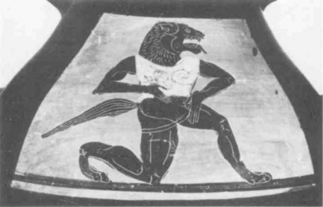
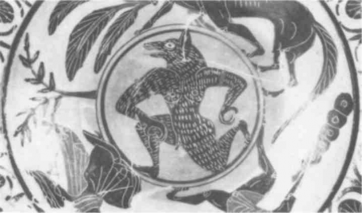

Memories of a Moviegoer. I recall the fine film Willard (1972, Daniel Mann). A “B” movie perhaps, but a fine unpopular film: unpopular because the heroes are rats. My memory of it is not necessarily accurate. I will recount the story in broad outline. Willard lives with his authoritarian mother in the old family house. Dreadful Oedipal atmosphere. His mother orders him to destroy a litter of rats. He spares one (or two or several). After a violent argument, the mother, who “resembles” a dog, dies. The house is coveted by a businessman, and Willard is in danger of losing it. He likes the principal rat he saved, Ben, who proves to be of prodigious intelligence. There is also a white female rat, Ben’s companion. Willard spends all his free time with them. They multiply. Willard takes the rat pack, led by Ben, to the home of the businessman, who is put to a terrible death. But he foolishly takes his two favorites to the office with him and has no choice but to let the employees kill the white rat. Ben escapes, after throwing Willard a long, hard glare. Willard then experiences a pause in his destiny, in his becoming-rat. He tries with all his might to remain among humans. He even responds to the advances of a young woman in the office who bears a strong “resemblance” to a rat — but it is only a resemblance. One day when he has invited the young woman over, all set to be conjugalized, reoedi-palized, Ben suddenly reappears, full of hate. Willard tries to drive him away, but succeeds only in driving away the young woman: he then is lured to the basement by Ben, where a pack of countless rats is waiting to tear him to shreds. It is like a tale; it is never disturbing.
It is all there: there is a becoming-animal not content to proceed by resemblance and for which resemblance, on the contrary, would represent an obstacle or stoppage; the proliferation of rats, the pack, brings a becoming-molecular that undermines the great molar powers of family, career, and conjugality; there is a sinister choice since there is a “favorite” in the pack with which a kind of contract of alliance, a hideous pact, is made; there is the institution of an assemblage, a war machine or criminal machine, which can reach the point of self-destruction; there is a circulation of impersonal affects, an alternate current that disrupts signifying projects as well as subjective feelings, and constitutes a nonhuman sexuality; and there is an irresistible deterritorialization that forestalls attempts at professional, conjugal, or Oedipal reterritorialization. (Are there Oedipal animals with which one can “play Oedipus,” play family, my little dog, my little cat, and then other animals that by contrast draw us into an irresistible becoming? Or another hypothesis: Can the same animal be taken up by two opposing functions and movements, depending on the case?)
Memories of a Naturalist. One of the main problems of natural history was to conceptualize the relationships between animals. It is very different in this respect from later evolutionism, which defined itself in terms of genealogy, kinship, descent, and filiation. As we know, evolutionism would arrive at the idea of an evolution that does not necessarily operate by filiation. But it was unavoidable that it begin with the genealogical motif. Darwin himself treats the evolutionist theme of kinship and the naturalist theme of the sum and value of differences or resemblances as very separate things: groups that are equally related can display highly variable degrees of difference with respect to the ancestor. Precisely because natural history is concerned primarily with the sum and value of differences, it can conceive of progressions and regressions, continuities and major breaks, but not an evolution in the strict sense, in other words, the possibility of a descent the degrees of modification of which depend on external conditions. Natural history can think only in terms of relationships (between A and B), not in terms of production (from A to x).
But something very important transpires at the level of relationships. For natural history conceives of the relationships between animals in two ways: series and structure. In the case of a series, I say a resembles b, b resembles c, etc.; all of these terms conform in varying degrees to a single, eminent term, perfection, or quality as the principle behind the series. This is exactly what the theologians used to call an analogy of proportion. In the case of a structure, I say a is to b as c is to d; and each of these relationships realizes after its fashion the perfection under consideration: gills are to breathing under water as lungs are to breathing air; or the heart is to gills as the absence of a heart is to tracheas [in insects]… This is an analogy of proportionality. In the first case, I have resemblances that differ from one another in a single series, and between series. In the second case, I have differences that resemble each other within a single structure, and between structures. The first form of analogy passes for the most sensible and popular, and requires imagination; but the kind of imagination it requires is a studious one that has to take branchings in the series into account, fill in apparent ruptures, ward off false resemblances and graduate the true ones, and take both progressions and regressions or degraduations into account. The second form of analogy is considered royal because it requires instead all the resources of understanding (entendement), in order to define equivalent relations by discovering, on the one hand, the independent variables that can be combined to form a structure and, on the other hand, the correlates that entail one another within each structure. As different as they are, the two themes of series and structure have always coexisted in natural history; in appearance contradictory, in practice they have reached a more or less stable compromise.1 In the same way, the two figures of analogy coexisted in the minds of the theologians in various equilibriums. This is because in both cases Nature is conceived as an enormous mimesis: either in the form of a chain of beings perpetually imitating one another, progressively and regressively, and tending toward the divine higher term they all imitate by graduated resemblance, as the model for and principle behind the series; or in the form of a mirror Imitation with nothing left to imitate because it itself is the model everything else imitates, this time by ordered difference. (This mimetic or mimological vision is what made the idea of an evolution-production possible at that moment.)
This problem is in no way behind us. Ideas do not die. Not that they survive simply as archaisms. At a given moment they may reach a scientific stage, and then lose that status or emigrate to other sciences. Their application and status, even their form and content, may change; yet they retain something essential throughout the process, across the displacement, in the distribution of a new domain. Ideas are always reusable, because they have been usable before, but in the most varied of actual modes. For, on the one hand, the relationships between animals are the object not only of science but also of dreams, symbolism, art and poetry, practice and practical use. And on the other hand, the relationships between animals are bound up with the relations between man and animal, man and woman, man and child, man and the elements, man and the physical and microphysical universe. The twofold idea “series-structure” crosses a scientific threshold at a certain moment; but it did not start there and it does not stay there, or else crosses over into other sciences, animating, for example, the human sciences, serving in the study of dreams, myths, and organizations. The history of ideas should never be continuous; it should be wary of resemblances, but also of descents or filiations; it should be content to mark the thresholds through which an idea passes, the journeys it takes that change its nature or object. Yet the objective relationships between animals have been applied to certain subjective relations between man and animal, from the standpoint of a collective imagination or a faculty of social understanding.
Jung elaborated a theory of the Archetype as collective unconscious; it assigns the animal a particularly important role in dreams, myths, and human collectivities. The animal is inseparable from a series exhibiting the double aspect of progression-regression, in which each term plays the role of a possible transformer of the libido (metamorphosis). A whole approach to the dream follows from this; given a troubling image, it becomes a question of integrating it into its archetypal series. That series may include feminine, masculine, or infantile sequences, as well as animal, vegetable, even elementary or molecular sequences. In contrast to natural history, man is now no longer the eminent term of the series; that term may be an animal for man, the lion, crab, bird of prey, or louse, in relation to a given act or function, in accordance with a given demand of the unconscious. Bachelard wrote a fine Jungian book when he elaborated the ramified series of Lautreamont, taking into account the speed coefficient of the metamorphoses and the degree of perfection of each term in relation to a pure aggressiveness as the principle of the series: the serpent’s fang, the horn of the rhinoceros, the dog’s tooth, the owl’s beak; and higher up, the claw of the eagle or the vulture, the pincer of the crab, the legs of the louse, the suckers of the octopus. Throughout Jung’s work a process of mimesis brings nature and culture together in its net, by means of analogies of proportion in which the series and their terms, and above all the animals occupying a middle position, assure cycles of conversion nature-culture-nature: archetypes as “analogical representations.”2
Is it by chance that structuralism so strongly denounced the prestige accorded the imagination, the establishment of resemblances in a series, the imitation pervading the entire series and carrying it to its term, and the identification with this final term? Nothing is more explicit than Levi-Strauss’s famous texts on totemism: transcend external resemblances to arrive at internal homologies.3 It is no longer a question of instituting a serial organization of the imaginary, but instead a symbolic and structural order of understanding. It is no longer a question of graduating resemblances, ultimately arriving at an identification between Man and Animal at the heart of a mystical participation. It is a question of ordering differences to arrive at a correspondence of relations. The animal is distributed according to differential relations or distinctive oppositions between species; the same goes for human beings, according to the groups considered. When analyzing the institution of the totem, we do not say that this group of people identifies with that animal species. We say that what group A is to group B, species A’ is to species B’. This method is profoundly different from the preceding one: given two human groups, each with its totem animal, we must discover the way in which the two totems entertain relations analogous to those between the two groups — the Crow is to the Falcon …
The method also applies to Man-child, man-woman relations, etc. If we note, for example, that the warrior has a certain astonishing relation to the young woman, we refrain from establishing an imaginary series tying the two together; instead, we look for a term effecting an equivalence of relations. Thus Vernant can say that marriage is to the woman what war is to the man. The result is a homology between the virgin who refuses marriage and the warrior who disguises himself as a woman.4 In short, symbolic understanding replaces the analogy of proportion with an analogy of proportionality; the serialization of resemblances with a structuration of differences; the identification of terms with an equality of relations; the metamorphoses of the imagination with conceptual metaphors; the great continuity between nature and culture with a deep rift distributing correspondences without resemblance between the two; the imitation of a primal model with a mimesis that is itself primary and without a model. A man can never say: “I am a bull, a wolf…” But he can say: “I am to a woman what the bull is to a cow, I am to another man what the wolf is to the sheep.” Structuralism represents a great revolution; the whole world becomes more rational. Levi-Strauss is not content to grant the structural model all the prestige of a true classification system; he relegates the serial model to the dark domain of sacrifice, which he depicts as illusory, even devoid of good sense. The serial theme of sacrifice must yield to the structural theme of the institution of the totem, correctly understood. But here, as in natural history, many compromises are reached between archetypal series and symbolic structures.5
Memories of a Bergsonian. None of the preceding satisfies us, from our restricted viewpoint. We believe in the existence of very special becomings-animal traversing human beings and sweeping them away, affecting the animal no less than the human. “From 1730 to 1735, all we hear about are vampires.” Structuralism clearly does not account for these becomings, since it is designed precisely to deny or at least denigrate their existence: a correspondence of relations does not add up to a becoming. When structuralism encounters becomings of this kind pervading a society, it sees them only as phenomena of degradation representing a deviation from the true order and pertaining to the adventures of diachrony. Yet in his study of myths, Levi-Strauss is always encountering these rapid acts by which a human becomes animal at the same time as the animal becomes… (Becomes what? Human, or something else?). It is always possible to try to explain these blocks ofbecomingby a correspondence between two relations, but to do so most certainly impoverishes the phenomenon under study. Must it not be admitted that myth as a frame of classification is quite incapable of registering these becomings, which are more like fragments of tales? Must we not lend credence to Jean Duvignaud’s hypothesis that there are “anomic” phenomena pervading societies that are not degradations of the mythic order but irreducible dynamisms drawing lines of flight and implying other forms of expression than those of myth, even if myth recapitulates them in its own terms in order to curb them?6 Does it not seem that alongside the two models, sacrifice and series, totem institution and structure, there is still room for something else, something more secret, more subterranean: the sorcerer and becomings (expressed in tales instead of myths or rites)?
A becoming is not a correspondence between relations. But neither is it a resemblance, an imitation, or, at the limit, an identification. The whole structuralist critique of the series seems irrefutable. To become is not to progress or regress along a series. Above all, becoming does not occur in the imagination, even when the imagination reaches the highest cosmic or dynamic level, as in Jung or Bachelard. Becomings-animal are neither dreams nor phantasies. They are perfectly real. But which reality is at issue here? For if becoming animal does not consist in playing animal or imitating an animal, it is clear that the human being does not “really” become an animal any more than the animal “really” becomes something else. Becoming produces nothing other than itself. We fall into a false alternative if we say that you either imitate or you are. What is real is the becoming itself, the block of becoming, not the supposedly fixed terms through which that which becomes passes. Becoming can and should be qualified as becoming-animal even in the absence of a term that would be the animal become. The becoming-animal of the human being is real, even if the animal the human being becomes is not; and the becoming-other of the animal is real, even if that something other it becomes is not. This is the point to clarify: that a becoming lacks a subject distinct from itself; but also that it has no term, since its term in turn exists only as taken up in another becoming of which it is the subject, and which coexists, forms a block, with the first. This is the principle according to which there is a reality specific to becoming (the Bergsonian idea of a coexistence of very different “durations,” superior or inferior to “ours,” all of them in communication).
Finally, becoming is not an evolution, at least not an evolution by descent and filiation. Becoming produces nothing by filiation; all filiation is imaginary. Becoming is always of a different order than filiation. It concerns alliance. If evolution includes any veritable becomings, it is in the domain of symbioses that bring into play beings of totally different scales and kingdoms, with no possible filiation. There is a block of becoming that snaps up the wasp and the orchid, but from which no wasp-orchid can ever descend. There is a block of becoming that takes hold of the cat and baboon, the alliance between which is effected by a C virus. There is a block of becoming between young roots and certain microorganisms, the alliance between which is effected by the materials synthesized in the leaves (rhizosphere). If there is originality in neoevolutionism, it is attributable in part to phenomena of this kind in which evolution does not go from something less differentiated to something more differentiated, in which it ceases to be a hereditary filiative evolution, becoming communicative or contagious. Accordingly, the term we would prefer for this form of evolution between heterogeneous terms is “involution,” on the condition that involution is in no way confused with regression. Becoming is involu-tionary, involution is creative. To regress is to move in the direction of something less differentiated. But to involve is to form a block that runs its own line “between” the terms in play and beneath assignable relations.
Neoevolutionism seems important for two reasons: the animal is defined not by characteristics (specific, generic, etc.) but by populations that vary from milieu to milieu or within the same milieu; movement occurs not only, or not primarily, by filiative productions but also by transversal communications between heterogeneous populations. Becoming is a rhizome, not a classificatory or genealogical tree. Becoming is certainly not imitating, or identifying with something; neither is it regressing-progressing; neither is it corresponding, establishing corresponding relations; neither is it producing, producing a filiation or producing through filiation. Becoming is a verb with a consistency all its own; it does not reduce to, or lead back to, “appearing,” “being,” “equaling,” or “producing.”
Memories of a Sorcerer, I. A becoming-animal always involves a pack, a band, a population, a peopling, in short, a multiplicity. We sorcerers have always known that. It may very well be that other agencies, moreover very different from one another, have a different appraisal of the animal. One may retain or extract from the animal certain characteristics: species and genera, forms and functions, etc. Society and the State need animal characteristics to use for classifying people; natural history and science need characteristics in order to classify the animals themselves. Serialism and structuralism either graduate characteristics according to their resemblances, or order them according to their differences. Animal characteristics can be mythic or scientific. But we are not interested in characteristics; what interests us are modes of expansion, propagation, occupation, contagion, peopling. I am legion. The Wolf-Man fascinated by several wolves watching him. What would a lone wolf be? Or a whale, a louse, a rat, a fly? Beelzebub is the Devil, but the Devil as lord of the flies. The wolf is not fundamentally a characteristic or a certain number of characteristics; it is a wolfing. The louse is a lousing, and so on. What is a cry independent of the population it appeals to or takes as its witness? Virginia Woolfs experiences herself not as a monkey or a fish but as a troop of monkeys, a school of fish, according to her variable relations of becoming with the people she approaches. We do not wish to say that certain animals live in packs. We want nothing to do with ridiculous evolutionary classifications a la Lorenz, according to which there are inferior packs and superior societies. What we are saying is that every animal is fundamentally a band, a pack. That it has pack modes, rather than characteristics, even if further distinctions within these modes are called for. It is at this point that the human being encounters the animal. We do not become animal without a fascination for the pack, for multiplicity. A fascination for the outside? Or is the multiplicity that fascinates us already related to a multiplicity dwelling within us? In one of his masterpieces, H. P. Lovecraft recounts the story of Randolph Carter, who feels his “self reel and who experiences a fear worse than that of annihilation: “Carters of forms both human and non-human, vertebrate and invertebrate, conscious and mindless, animal and vegetable. And more, there were Carters having nothing in common with earthly life, but moving outrageously amidst backgrounds of other planets and systems and galaxies and cosmic continua… . Merging with nothingness is peaceful oblivion; but to be aware of existence and yet to know that one is no longer a definite being distinguished from other beings,” nor from all of the becomings running through us, “that is the nameless summit of agony and dread.”7 Hofmannsthal, or rather Lord Chandos, becomes fascinated with a “people” of dying rats, and it is in him, through him, in the interstices of his disrupted self that the “soul of the animal bares its teeth at monsterous fate”:8 not pity, but unnatural participation. Then a strange imperative wells up in him: either stop writing, or write like a rat… If the writer is a sorcerer, it is because writing is a becoming, writing is traversed by strange becomings that are not becomings-writer, but becomings-rat, becomings-insect, becomings-wolf, etc. We will have to explain why. Many suicides by writers are explained by these unnatural participations, these unnatural nuptials. Writers are sorcerers because they experience the animal as the only population before which they are responsible in principle. The German preromantic Karl Philipp Moritz feels responsible not for the calves that die but before the calves that die and give him the incredible feeling of an unknown Nature — affect? For the affect is not a personal feeling, nor is it a characteristic; it is the effectuation of a power of the pack that throws the self into upheaval and makes it reel. Who has not known the violence of these animal sequences, which uproot one from humanity, if only for an instant, making one scrape at one’s bread like a rodent or giving one the yellow eyes of a feline? A fearsome involution calling us toward unheard-of becomings. These are not regressions, although fragments of regression, sequences of regression may enter in.
We must distinguish three kinds of animals. First, individuated animals, family pets, sentimental, Oedipal animals each with its own petty history, “my” cat, “my” dog. These animals invite us to regress, draw us into a narcissistic contemplation, and they are the only kind of animal psychoanalysis understands, the better to discover a daddy, a mommy, a little brother behind them (when psychoanalysis talks about animals, animals learn to laugh): anyone who likes cats or dogs is a fool. And then there is a second kind: animals with characteristics or attributes; genus, classification, or State animals; animals as they are treated in the great divine myths, in such a way as to extract from them series or structures, archetypes or models (Jung is in any event profounder than Freud). Finally, there are more demonic animals, pack or affect animals that form a multiplicity, a becoming, a population, a tale … Or once again, cannot any animal be treated in all three ways? There is always the possibility that a given animal, a louse, a cheetah or an elephant, will be treated as a pet, my little beast. And at the other extreme, it is also possible for any animal to be treated in the mode of the pack or swarm; that is our way, fellow sorcerers. Even the cat, even the dog. And the shepherd, the animal trainer, the Devil, may have a favorite animal in the pack, although not at all in the way we were just discussing. Yes, any animal is or can be a pack, but to varying degrees of vocation that make it easier or harder to discover the multiplicity, or multiplicity-grade, an animal contains (actually or virtually according to the case). Schools, bands, herds, populations are not inferior social forms; they are affects and powers, involutions that grip every animal in a becoming just as powerful as that of the human being with the animal.
Jorge Luis Borges, an author renowned for his excess of culture, botched at least two books, only the titles of which are nice: first, A Universal History of Infamy, because he did not see the sorcerer’s fundamental distinction between deception and treason (becomings-animal are there from the start, on the treason side); second, his Manual de zoolog’iafantastica, where he not only adopts a composite and bland image of myth but also eliminates all of the problems of the pack and the corresponding becoming-animal of the human being: “We have deliberately excluded from this manual legends of transformations of the human being, the lobizbn, the werewolf, etc.”10 Borges is interested only in characteristics, even the most fantastic ones, whereas sorcerers know that werewolves are bands, and vampires too, and that bands transform themselves into one another. But what exactly does that mean, the animal as band or pack? Does a band not imply a filiation, bringing us back to the reproduction of given characteristics? How can we conceive of a peopling, a propagation, a becoming that is without filiation or hereditary production? A multiplicity without the unity of an ancestor? It is quite simple; everybody knows it, but it is discussed only in secret. We oppose epidemic to filiation, contagion to heredity, peopling by contagion to sexual reproduction, sexual production. Bands, human or animal, proliferate by contagion, epidemics, battlefields, and catastrophes. Like hybrids, which are in themselves sterile, born of a sexual union that will not reproduce itself, but which begins over again every time, gaining that much more ground. Unnatural participations or nuptials are the true Nature spanning the kingdoms of nature. Propagation by epidemic, by contagion, has nothing to do with filiation by heredity, even if the two themes intermingle and require each other. The vampire does not filiate, it infects. The difference is that contagion, epidemic, involves terms that are entirely heterogeneous: for example, a human being, an animal, and a bacterium, a virus, a molecule, a microorganism. Or in the case of the truffle, a tree, a fly, and a pig. These combinations are neither genetic nor structural; they are interkingdoms, unnatural participations. That is the only way Nature operates — against itself. This is a far cry from filiative production or hereditary reproduction, in which the only differences retained are a simple duality between sexes within the same species, and small modifications across generations. For us, on the other hand, there are as many sexes as there are terms in symbiosis, as many differences as elements contributing to a process of contagion. We know that many beings pass between a man and a woman; they come from different worlds, are borne on the wind, form rhizomes around roots; they cannot be understood in terms of production, only in terms of becoming. The Universe does not function by filiation. All we are saying is that animals are packs, and that packs form, develop, and are transformed by contagion.
These multiplicities with heterogeneous terms, cofunctioning by contagion, enter certain assemblages; it is there that human beings effect their becomings-animal. But we should not confuse these dark assemblages, which stir what is deepest within us, with organizations such as the institution of the family and the State apparatus. We could cite hunting societies, war societies, secret societies, crime societies, etc. Becomings-animal are proper to them. We will not expect to find filiative regimes of the family type or modes of classification and attribution of the State or pre-State type or even serial organizations of the religious type. Despite appearances and possible confusions, this is not the site of origin or point of application for myths. These are tales, or narratives and statements of becoming. It is therefore absurd to establish a hierarchy even of animal collectivities from the standpoint of a whimsical evolutionism according to which packs are lower on the scale and are superseded by State or familial societies. On the contrary, there is a difference in nature. The origin of packs is entirely different from that of families and States; they continually work them from within and trouble them from without, with other forms of content, other forms of expression. The pack is simultaneously an animal reality, and the reality of the becoming-animal of the human being; contagion is simultaneously an animal peopling, and the propagation of the animal peopling of the human being. The hunting machine, the war machine, the crime machine entail all kinds of becomings-animal that are not articulated in myth, still less in totemism. Dumezil showed that becomings of this kind pertain essentially to the man of war, but only insofar as he is external to families and States, insofar as he upsets filiations and classifications. The war machine is always exterior to the State, even when the State uses it, appropriates it. The man of war has an entire becoming that implies multiplicity, celerity, ubiquity, metamorphosis and treason, the power of affect. Wolf-men, bear-men, wildcat-men, men of every animality, secret brotherhoods, animate the battlefields. But so do the animal packs used by men in battle, or which trail the battles and take advantage of them. And together they spread contagion.11 There is a complex aggregate: the becoming-animal of men, packs of animals, elephants and rats, winds and tempests, bacteria sowing contagion. A single Furor. War contained zoological sequences before it became bacteriological. It is in war, famine, and epidemic that werewolves and vampires proliferate. Any animal can be swept up in these packs and the corresponding becomings; cats have been seen on the battlefield, and even in armies. That is why the distinction we must make is less between kinds of animals than between the different states according to which they are integrated into family institutions, State apparatuses, war machines, etc. (and what is the relation of the writing machine and the musical machine to becomings-animal?)
Memories of a Sorcerer, II. Our first principle was: pack and contagion, the contagion of the pack, such is the path becoming-animal takes. But a second principle seemed to tell us the opposite: wherever there is multiplicity, you will also find an exceptional individual, and it is with that individual that an alliance must be made in order to become-animal. There may be no such thing as a lone wolf, but there is a leader of the pack, a master of the pack, or else the old deposed head of the pack now living alone, there is the Loner, and there is the Demon. Willard has his favorite, the rat Ben, and only becomes-rat through his relation with him, in a kind of alliance of love, then of hate. Moby-Dick in its entirety is one of the greatest masterpieces of becoming; Captain Ahab has an irresistible becoming-whale, but one that bypasses the pack or the school, operating directly through a monstrous alliance with the Unique, the Leviathan, Moby-Dick. There is always a pact with a demon; the demon sometimes appears as the head of the band, sometimes as the Loner on the sidelines of the pack, and sometimes as the higher Power (Puissance) of the band. The exceptional individual has many possible positions. Kafka, another great author of real becomings-animal, sings of mouse society; but Josephine, the mouse singer, sometimes holds a privileged position in the pack, sometimes a position outside the pack, and sometimes slips into and is lost in the anonymity of the collective statements of the pack.12 In short, every Animal has its Anomalous. Let us clarify that: every animal swept up in its pack or multiplicity has its anomalous. It has been noted that the origin of the word anomal (“anomalous”), an adjective that has fallen into disuse in French, is very different from that of anormal (“abnormal”): a-normal, a Latin adjective lacking a noun in French, refers to that which is outside rules or goes against the rules, whereas an-omalie, a Greek noun that has lost its adjective, designates the unequal, the coarse, the rough, the cutting edge of deterritorialization.13 The abnormal can be defined only in terms of characteristics, specific or generic; but the anomalous is a position or set of positions in relation to a multiplicity. Sorcerers therefore use the old adjective “anomalous” to situate the positions of the exceptional individual in the pack. It is always with the Anomalous, Moby-Dick or Josephine, that one enters into alliance to become-animal.
It does seem as though there is a contradiction: between the pack and the loner; between mass contagion and preferential alliance; between pure multiplicity and the exceptional individual; between the aleatory aggregate and a predestined choice. And the contradiction is real: Ahab chooses Moby-Dick, in a choosing that exceeds him and comes from elsewhere, and in so doing breaks with the law of the whalers according to which one should first pursue the pack. Penthesilea shatters the law of the pack, the pack of women, the pack of she-dogs, by choosing Achilles as her favorite enemy. Yet it is by means of this anomalous choice that each enters into his or her becoming-animal, the becoming-dog of Penthesilea, the becoming-whale of Captain Ahab. We sorcerers know quite well that the contradictions are real but that real contradictions are not just for laughs. For the whole question is this: What exactly is the nature of the anomalous? What function does it have in relation to the band, to the pack? It is clear that the anomalous is not simply an exceptional individual; that would be to equate it with the family animal or pet, the Oedipalized animal as psychoanalysis sees it, as the image of the father, etc. Ahab’s Moby-Dick is not like the little cat or dog owned by an elderly woman who honors and cherishes it. Lawrence’s becoming-tortoise has nothing to do with a sentimental or domestic relation. Lawrence is another of the writers who leave us troubled and filled with admiration because they were able to tie their writing to real and unheard-of becomings. But the objection is raised against Lawrence: “Your tortoises aren’t real!” And he answers: Possibly, but my becoming is, my becoming is real, even and especially if you have no way of judging it, because you’re just little house dogs …14 The anomalous, the preferential element in the pack, has nothing to do with the preferred, domestic, and psychoanalytic individual. Nor is the anomalous the bearer of a species presenting specific or generic characteristics in their purest state; nor is it a model or unique specimen; nor is it the perfection of a type incarnate; nor is it the eminent term of a series; nor is it the basis of an absolutely harmonious correspondence. The anomalous is neither an individual nor a species; it has only affects, it has neither familiar or subjectified feelings, nor specific or significant characteristics. Human tenderness is as foreign to it as human classifications. Lovecraft applies the term “Outsider” to this thing or entity, the Thing, which arrives and passes at the edge, which is linear yet multiple, “teeming, seething, swelling, foaming, spreading like an infectious disease, this nameless horror.”
If the anomalous is neither an individual nor a species, then what is it? It is a phenomenon, but a phenomenon of bordering. This is our hypothesis: a multiplicity is defined not by the elements that compose it in extension, not by the characteristics that compose it in comprehension, but by the lines and dimensions it encompasses in “intension.” If you change dimensions, if you add or subtract one, you change multiplicity. Thus there is a borderline for each multiplicity; it is in no way a center but rather the enveloping line or farthest dimension, as a function of which it is possible to count the others, all those lines or dimensions constitute the pack at a given moment (beyond the borderline, the multiplicity changes nature). That is what Captain Ahab says to his first mate: I have no personal history with Moby-Dick, no revenge to take, any more than I have a myth to play out; but I do have a becoming! Moby-Dick is neither an individual nor a genus; he is the borderline, and I have to strike him to get at the pack as a whole, to reach the pack as a whole and pass beyond it. The elements of the pack are only imaginary “dummies,” the characteristics of the pack are only symbolic entities; all that counts is the borderline — the anomalous. “To me, the white whale is that wall, shoved near to me.” The white wall. “Sometimes I think there is naught beyond. But ‘tis enough.”15 That the anomalous is the borderline makes it easier for us to understand the various positions it occupies in relation to the pack or the multiplicity it borders, and the various positions occupied by a fascinated Self (Moi). It is now even possible to establish a classification system for packs while avoiding the pitfalls of an evolutionism that sees them only as an inferior collective stage (instead of taking into consideration the particular assemblages they bring into play). In any event, the pack has a borderline, and an anomalous position, whenever in a given space an animal is on the line or in the act of drawing the line in relation to which all the other members of the pack will fall into one of two halves, left or right: a peripheral position, such that it is impossible to tell if the anomalous is still in the band, already outside the band, or at the shifting boundary of the band. Sometimes each and every animal reaches this line or occupies this dynamic position, as in a swarm of mosquitoes, where “each individual moves randomly unless it sees the rest of [the swarm] in the same half-space; then it hurries to re-enter the group. Thus stability is assured in catastrophe by a barrier.”**’ Sometimes it is a specific animal that draws and occupies the borderline, as leader of the pack. Sometimes the borderline is defined or doubled by a being of another nature that no longer belongs to the pack, or never belonged to it, and that represents a power of another order, potentially acting as a threat as well as a trainer, outsider, etc. In any case, no band is without this phenomenon of bordering, or the anomalous. It is true that bands are also undermined by extremely varied forces that establish in them interior centers of the conjugal, familial, or State type, and that make them pass into an entirely different form of sociability, replacing pack affects with family feelings or State intelligibilities. The center, or internal black holes, assumes the principal role. This is what evolutionism sees as progress, this adventure also befalls bands of humans when they reconstitute group familialism, or even authoritarianism or pack fascism.
Sorcerers have always held the anomalous position, at the edge of the fields or woods. They haunt the fringes. They are at the borderline of the village, or between villages. The important thing is their affinity with alliance, with the pact, which gives them a status opposed to that of filiation. The relation with the anomalous is one of alliance. The sorcerer has a relation of alliance with the demon as the power of the anomalous. The old-time theologians drew a clear distinction between two kinds of curses against sexuality. The first concerns sexuality as a process of filiation transmitting the original sin. But the second concerns it as a power of alliance inspiring illicit unions or abominable loves. This differs significantly from the first in that it tends to prevent procreation; since the demon does not himself have the ability to procreate, he must adopt indirect means (for example, being the female succubus of a man and then becoming the male incubus of a woman, to whom he transmits the man’s semen). It is true that the relations between alliance and filiation come to be regulated by laws of marriage, but even then alliance retains a dangerous and contagious power. Leach was able to demonstrate that despite all the exceptions that seemingly disprove the rule, the sorcerer belongs first of all to a group united to the group over which he or she exercises influence only by alliance: thus in a matrilineal group we look to the father’s side for the sorcerer or witch. And there is an entire evolution of sorcery depending on whether the relation of alliance acquires permanence or assumes political weight.17 In order to produce werewolves in your own family it is not enough to resemble a wolf, or to live like a wolf: the pact with the Devil must be coupled with an alliance with another family, and it is the return of this alliance to the first family, the reaction of this alliance on the first family, that produces werewolves by feedback effect. A fine tale by Erckmann and Chatrian, Hugues-le-loup, assembles the traditions concerning this complex situation.18
The contradiction between the two themes, “contagion through the animal as pack,” and “pact with the anomalous as exceptional being,” is progressively fading. It is with good reason that Leach links the two concepts of alliance and contagion, pact and epidemic. Analyzing Kachin sorcery, he writes: “Witch influence was thought to be transmitted in the food that the women prepared… . Kachin witchcraft is contagious rather than hereditary … it is associated with affinity, not filiation.”19 Alliance or the pact is the form of expression for an infection or epidemic constituting the form of content. In sorcery, blood is of the order of contagion and alliance. It can be said that becoming-animal is an affair of sorcery because (1) it implies an initial relation of alliance with a demon; (2) the demon functions as the borderline of an animal pack, into which the human being passes or in which his or her becoming takes place, by contagion; (3) this becoming itself implies a second alliance, with another human group; (4) this new borderline between the two groups guides the contagion of animal and human being within the pack. There is an entire politics of becomings-animal, as well as a politics of sorcery, which is elaborated in assemblages that are neither those of the family nor of religion nor of the State. Instead, they express minoritarian groups, or groups that are oppressed, prohibited, in revolt, or always on the fringe of recognized institutions, groups all the more secret for being extrinsic, in other words, anomic. If becoming-animal takes the form of a Temptation, and of monsters aroused in the imagination by the demon, it is because it is accompanied, at its origin as in its undertaking, by a rupture with the central institutions that have established themselves or seek to become established.
Let us cite pell-mell, not as mixes to be made, but as different cases to be studied: becomings-animal in the war machine, wildmen of all kinds (the war machine indeed comes from without, it is extrinsic to the State, which treats the warrior as an anomalous power); becomings-animal in crime societies, leopard-men, crocodile-men (when the State prohibits tribal and local wars); becomings-animal in riot groups (when the Church and State are faced with peasant movements containing a sorcery component, which they repress by setting up a whole trial and legal system designed to expose pacts with the Devil); becomings-animal in asceticism groups, the grazing anchorite or wild-beast anchorite (the asceticism machine is in an anomalous position, on a line of flight, off to the side of the Church, and disputes the Church’s pretension to set itself up as an imperial institution);20 becomings-animal in societies practicing sexual initiation of the “sacred deflowerer” type, wolf-men, goat-men, etc. (who claim an Alliance superior and exterior to the order of families; families have to win from them the right to regulate their own alliances, to determine them according to relations of complementary lines of descent, and to domesticate this unbridled power of alliance).21
The politics of becomings-animal remains, of course, extremely ambiguous. For societies, even primitive societies, have always appropriated these becomings in order to break them, reduce them to relations of totemic or symbolic correspondence. States have always appropriated the war machine in the form of national armies that strictly limit the becomings of the warrior. The Church has always burned sorcerers, or reintegrated anchorites into the toned-down image of a series of saints whose only remaining relation to animals is strangely familiar, domestic. Families have always warded off the demonic Alliance gnawing at them, in order to regulate alliances among themselves as they see fit. We have seen sorcerers serve as leaders, rally to the cause of despotism, create the countersorcery of exorcism, pass over to the side of the family and descent. But this spells the death of the sorcerer, and also the death of becoming. We have seen becoming spawn nothing more than a big domestic dog, as in Henry Miller’s damnation (“it would be better to feign, to pretend to be an animal, a dog for example, and catch the bone thrown to me from time to time”) or Fitzgerald’s (“I will try to be a correct animal though, and if you throw me a bone with enough meat on it I may even lick your hand”). Invert Faust’s formula: So that is what it was, the form of the traveling scholar? A mere poodle?22
Memories of a Sorcerer, III. Exclusive importance should not be attached to becomings-animal. Rather, they are segments occupying a median region. On the near side, we encounter becomings-woman, becomings-child (becoming-woman, more than any other becoming, possesses a special introductory power; it is not so much that women are witches, but that sorcery proceeds by way of this becoming-woman). On the far side, we find becomings-elementary, -cellular, -molecular, and even becomings-imperceptible. Toward what void does the witch’s broom lead? And where is Moby-Dick leading Ahab so silently? Lovecraft’s hero encounters strange animals, but he finally reaches the ultimate regions of a Continuum inhabited by unnameable waves and unfindable particles. Science fiction has gone through a whole evolution taking it from animal, vegetable, and mineral becomings to becomings of bacteria, viruses, molecules, and things imperceptible.23 The properly musical content of music is plied by becomings-woman, becomings-child, becomings-animal; however, it tends, under all sorts of influences, having to do also with the instruments, to become progressively more molecular in a kind of cosmic lapping through which the inaudible makes itself heard and the imperceptible appears as such: no longer the songbird, but the sound molecule.
If the experimentation with drugs has left its mark on everyone, even nonusers, it is because it changed the perceptive coordinates of space-time and introduced us to a universe of microperceptions in which becomings-molecular take over where becomings-animal leave off. Carlos Castaneda’s books clearly illustrate this evolution, or rather this involution, in which the affects of a becoming-dog, for example, are succeeded by those of a becoming-molecular, microperceptions of water, air, etc. A man totters from one door to the next and disappears into thin air: “All I can tell you is that we are fluid, luminous beings made of fibers.”24 All so-called initiatory journeys include these thresholds and doors where becoming itself becomes, and where one changes becoming depending on the “hour” of the world, the circles of hell, or the stages of a journey that sets scales, forms, and cries in variation. From the howling of animals to the wailing of elements and particles.
Thus packs, or multiplicities, continually transform themselves into each other, cross over into each other. Werewolves become vampires when they die. This is not surprising, since becoming and multiplicity are the same thing. A multiplicity is defined not by its elements, nor by a center of unification or comprehension. It is defined by the number of dimensions it has; it is not divisible, it cannot lose or gain a dimension without changing its nature. Since its variations and dimensions are immanent to it, it amounts to the same thing to say that each multiplicity is already composed of heterogeneous terms in symbiosis, and that a multiplicity is continually transforming itself into a string of other multiplicities, according to its thresholds and doors. For example, the Wolf-Man’s pack of wolves also becomes a swarm of bees, and a field of anuses, and a collection of small holes and tiny ulcerations (the theme of contagion): all these heterogeneous elements compose “the” multiplicity of symbiosis and becoming. If we imagined the position of a fascinated Self, it was because the multiplicity toward which it leans, stretching to the breaking point, is the continuation of another multiplicity that works it and strains it from the inside. In fact, the self is only a threshold, a door, a becoming between two multiplicities. Each multiplicity is defined by a borderline functioning as Anomalous, but there is a string of borderlines, a continuous line of borderlines (fiber) following which the multiplicity changes. And at each threshold or door, a new pact? A fiber stretches from a human to an animal, from a human or an animal to molecules, from molecules to particles, and so on to the imperceptible. Every fiber is a Universe fiber. A fiber strung across borderlines constitutes a line of flight or of deterritorialization. It is evident that the Anomalous, the Outsider, has several functions: not only does it border each multiplicity, of which it determines the temporary or local stability (with the highest number of dimensions possible under the circumstances), not only is it the precondition for the alliance necessary to becoming, but it also carries the transformations of becoming or crossings of multiplicities always farther down the line of flight. Moby-Dick is the White Wall bordering the pack; he is also the demonic Term of the Alliance; finally, he is the terrible Fishing Line with nothing on the other end, the line that crosses the wall and drags the captain… where? Into the void …
The error we must guard against is to believe that there is a kind of logical order to this string, these crossings or transformations. It is already going too far to postulate an order descending from the animal to the vegetable, then to molecules, to particles. Each multiplicity is symbiotic; its becoming ties together animals, plants, microorganisms, mad particles, a whole galaxy. Nor is there a preformed logical order to these heterogeneities, the Wolf-Man’s wolves, bees, anuses, little scars. Of course, sorcery always codifies certain transformations of becomings. Take a novel steeped in the traditions of sorcery, Alexandre Dumas’s Menem de loups; in a first pact, the man of the fringes gets the Devil to agree to make his wishes come true, with the stipulation that a lock of his hair turn red each time he gets a wish. We are in the hair-multiplicity, hair is the borderline. The man himself takes a position on the wolves’ borderline, as leader of the pack. Then when he no longer has a single human hair left, a second pact makes him become-wolf himself; it is an endless becoming since he is only vulnerable one day in the year. We are aware that between the hair-multiplicity and the wolf-multiplicity it is always possible to induce an order of resemblance (red like the fur of a wolf); but the resemblance remains quite secondary (the wolf of the transformation is black, with one white hair). In fact, there is a first multiplicity, of hair, taken up in a becoming-red fur; and a second multiplicity, of wolves, which in turn takes up the becoming-animal of the man. Between the two, there is threshold and fiber, symbiosis of or passage between heterogeneities. That is how we sorcerers operate. Not following a logical order, but following alogical consistencies or compatibilities. The reason is simple. It is because no one, not even God, can say in advance whether two borderlines will string together or form a fiber, whether a given multiplicity will or will not cross over into another given multiplicity, or even if given heterogeneous elements will enter symbiosis, will form a consistent, or cofunctioning, multiplicity susceptible to transformation. No one can say where the line of flight will pass: Will it let itself get bogged down and fall back to the Oedipal family animal, a mere poodle? Or will it succumb to another danger, for example, turning into a line of abolition, annihilation, self-destruction, Ahab,Ahab… ?We are all too familiar with the dangers of the line of flight, and with its ambiguities. The risks are ever-present, but it is always possible to have the good fortune of avoiding them. Case by case, we can tell whether the line is consistent, in other words, whether the heterogeneities effectively function in a multiplicity of symbiosis, whether the multiplicities are effectively transformed through the becomings of passage. Let us take an example as simple as: x starts practicing piano again. Is it an Oedipal return to childhood? Is it a way of dying, in a kind of sonorous abolition? Is it a new borderline, an active line that will bring other becomings entirely different from becoming or rebecoming a pianist, that will induce a transformation of all of the preceding assemblages to which x was prisoner? Is it a way out? Is it a pact with the Devil? Schizoanalysis, or pragmatics, has no other meaning: Make a rhizome. But you don’t know what you can make a rhizome with, you don’t know which subterranean stem is effectively going to make a rhizome, or enter a becoming, people your desert. So experiment.
That’s easy to say? Although there is no preformed logical order to becomings and multiplicities, there are criteria, and the important thing is that they not be used after the fact, that they be applied in the course of events, that they be sufficient to guide us through the dangers. If multiplicities are defined and transformed by the borderline that determines in each instance their number of dimensions, we can conceive of the possibility of laying them out on a plane, the borderlines succeeding one another, forming a broken line. It is only in appearance that a plane of this kind “reduces” the number of dimensions; for it gathers in all the dimensions to the extent that flat multiplicities — which nonetheless have an increasing or decreasing number of dimensions — are inscribed upon it. It is in grandiose and simplified terms that Lovecraft attempted to pronounce sorcery’s final word: “Then the waves increased in strength and sought to improve his understanding, reconciling him to the multiform entity of which his present fragment was an infinitesimal part. They told him that every figure of space is but the result of the intersection by a plane of some corresponding figure of one more dimension — as a square is cut from a cube, or a circle from a sphere. The cube and sphere, of three dimensions, are thus cut from corresponding forms of four dimensions, which men know only through guesses and dreams; and these in turn are cut from forms of five dimensions, and so on up to the dizzy and reachless heights of archetypal infinity.”25 Far from reducing the multiplicities’ number of dimensions to two, the plane of consistency cuts across them all, intersects them in order to bring into coexistence any number of multiplicities, with any number of dimensions. The plane of consistency is the intersection of all concrete forms. Therefore all becomings are written like sorcerers’ drawings on this plane of consistency, which is the ultimate Door providing a way out for them. This is the only criterion to prevent them from bogging down, or veering into the void. The only question is: Does a given becoming reach that point? Can a given multiplicity flatten and conserve all its dimensions in this way, like a pressed flower that remains just as alive dry? Lawrence, in his becoming-tortoise, moves from the most obstinate animal dynamism to the abstract, pure geometry of scales and “cleavages of division,” without, however, losing any of the dynamism: he pushes becoming-tortoise all the way to the plane of consistency.26 Everything becomes imperceptible, everything is becoming-imperceptible on the plane of consistency, which is nevertheless precisely where the imperceptible is seen and heard. It is the Planomenon, or the Rhizosphere, the Criterium (and still other names, as the number of dimensions increases). At n dimensions, it is called the Hypersphere, the Mechanosphere. It is the abstract Figure, or rather, since it has no form itself, the abstract Machine of which each concrete assemblage is a multiplicity, a becoming, a segment, a vibration. And the abstract machine is the intersection of them all.
Waves are vibrations, shifting borderlines inscribed on the plane of consistency as so many abstractions. The abstract machine of the waves. In The Waves, Virginia Woolf — who made all of her life and work a passage, a becoming, all kinds of becomings between ages, sexes, elements, and kingdoms — intermingles seven characters, Bernard, Neville, Louis, Jinny, Rhoda, Suzanne, and Percival. But each of these characters, with his or her name, its individuality, designates a multiplicity (for example, Bernard and the school offish). Each is simultaneously in this multiplicity and at its edge, and crosses over into the others. Percival is like the ultimate multiplicity enveloping the greatest number of dimensions. But he is not yet the plane of consistency. Although Rhoda thinks she sees him rising out of the sea, no, it is not he. “When the white arm rests upon the knee it is a triangle; now it is upright — a column; now a fountain…. Behind it roars the sea. It is beyond our reach.”27 Each advances like a wave, but on the plane of consistency they are a single abstract Wave whose vibration propagates following a line of flight or deterritorialization traversing the entire plane (each chapter of Woolf s novel is preceded by a meditation on an aspect of the waves, on one of their hours, on one of their becomings).
Memories of a Theologian. Theology is very strict on the following point: there are no werewolves, human beings cannot become animal. That is because there is no transformation of essential forms; they are inalienable and only entertain relations of analogy. The Devil and the witch, and the pact between them, are no less real for that, for there is in reality a local movement that is properly diabolical. Theology distinguishes two cases, used as models during the Inquisition: that of Ulysses’ companions, and that of Diomedes’ companions, the imaginary vision and the spell. In the first, the subject believes himor herself to be transformed into an animal, pig, ox, or wolf, and the observers believe it too; but this is an internal local movement bringing sensible images back to the imagination and bouncing them off external meanings. In the second, the Devil “assumes” real animal bodies, even transporting the accidents and affects befalling them to other bodies (for example, a cat or a wolf that has been taken over by the Devil can receive wounds that are relayed to an exactly corresponding part of a human body).28 This is a way of saying that the human being does not become animal in reality, but that there is nevertheless a demonic reality of the becoming-animal of the human being. Therefore it is certain that the demon performs local transports of all kinds. The Devil is a transporter; he transports humors, affects, or even bodies (the Inquisition brooks no compromises on this power of the Devil: the witch’s broom, or “the Devil take you”). But these transports cross neither the barrier of essential forms nor that of substances or subjects.
There is another, altogether different, problem concerning the laws of nature that has to do not with demonology but with alchemy, and above all physics. It is the problem of accidental forms, distinct from both essential forms and determined subjects. For accidental forms are susceptible to more and less: more or less charitable, but also more or less white, more or less warm. A degree of heat is a perfectly individuated warmth distinct from the substance or the subject that receives it. A degree of heat can enter into composition with a degree of whiteness, or with another degree of heat, to form a third unique individuality distinct from that of the subject. What is the individuality of a day, a season, an event? A shorter day and a longer day are not, strictly speaking, extensions but degrees proper to extension, just as there are degrees proper to heat, color, etc. An accidental form therefore has a “latitude” constituted by a certain number of composable individuations. A degree, an intensity, is an individual, a Haecceity that enters into composition with other degrees, other intensities, to form another individual. Can latitude be explained by the fact that the subject participates more or less in the accidental form? But do these degrees of participation not imply a flutter, a vibration in the form itself that is not reducible to the properties of a subject? Moreover, if intensities of heat are not composed by addition, it is because one must add their respective subjects; it is the subjects that prevent the heat of the whole from increasing. All the more reason to effect distributions of intensity, to establish latitudes that are “deformedly deformed,” speeds, slownesses, and degrees of all kinds corresponding to a body or set of bodies taken as longitude: a cartography.29 In short, between substantial forms and determined subjects, between the two, there is not only a whole operation of demonic local transports but a natural play of haecceities, degrees, intensities, events, and accidents that compose individuations totally different from those of the well-formed subjects that receive them.
Memories of a Spinozist, I. Substantial or essential forms have been critiqued in many different ways. Spinoza’s approach is radical: Arrive at elements that no longer have either form or function, that are abstract in this sense even though they are perfectly real. They are distinguished solely by movement and rest, slowness and speed. They are not atoms, in other words, finite elements still endowed with form. Nor are they indefinitely divisible. They are infinitely small, ultimate parts of an actual infinity, laid out on the same plane of consistency or composition. They are not defined by their number since they always come in infinities. However, depending on their degree of speed or the relation of movement and rest into which they enter, they belong to a given Individual, which may itself be part of another Individual governed by another, more complex, relation, and so on to infinity. There are thus smaller and larger infinities, not by virtue of their number, but by virtue of the composition of the relation into which their parts enter. Thus each individual is an infinite multiplicity, and the whole of Nature is a multiplicity of perfectly individuated multiplicities. The plane of consistency of Nature is like an immense Abstract Machine, abstract yet real and individual; its pieces are the various assemblages and individuals, each of which groups together an infinity of particles entering into an infinity of more or less interconnected relations. There is therefore a unity to the plane of nature, which applies equally to the inanimate and the animate, the artificial and the natural. This plane has nothing to do with a form or a figure, nor with a design or a function. Its unity has nothing to do with a ground buried deep within things, nor with an end or a project in the mind of God. Instead, it is a plane upon which everything is laid out, and which is like the intersection of all forms, the machine of all functions; its dimensions, however, increase with those of the multiplicities of individualities it cuts across. It is a fixed plane, upon which things are distinguished from one another only by speed and slowness. A plane of immanence or univocality opposed to analogy. The One is said with a single meaning of all the multiple. Being expresses in a single meaning all that differs. What we are talking about is not the unity of substance but the infinity of the modifications that are part of one another on this unique plane of life.
The never-ending debate between Cuvier and Geoffroy Saint-Hilaire: both agree at least in denouncing resemblances, or imaginary, sensible analogies, but in Cuvier, scientific definition concerns the relations between organs, and between organs and functions. Cuvier thus takes analogy to the scientific stage, making it an analogy of proportionality. The unity of the plane, according to him, can only be a unity of analogy, therefore a transcendent unity that cannot be realized without fragmenting into distinct branches, according to irreducible, uncrossable, heterogeneous compositions. Baer would later add: according to noncommunicating types of development and differentiation. The plane is a hidden plan(e) of organization, a structure or genesis. Geoffroy has an entirely different point of view because he goes beyond organs and functions to abstract elements he terms “anatomical,” even to particles, pure materials that enter into various combinations, forming a given organ and assuming a given function depending on their degree of speed or slowness. Speed and slowness, movement and rest, tardiness and rapidity subordinate not only the forms of structure but also the types of development. This approach later reappears in an evolutionist framework, with Perrier’s tachygenesis and differential rates of growth in allometry: species as kinematic entities that are either precocious or retarded. (Even the question of fertility is less one of form and function than speed; do the paternal chromosomes arrive early enough to be incorporated into the nuclei?) In any case, there is a pure plane of immanence, univocality, composition, upon which everything is given, upon which unformed elements and materials dance that are distinguished from one another only by their speed and that enter into this or that individuated assemblage depending on their connections, their relations of movement. A fixed plane of life upon which everything stirs, slows down or accelerates. A single abstract Animal for all the assemblages that effectuate it. A unique plane of consistency or composition for the cephalo-pod and the vertebrate; for the vertebrate to become an Octopus or Cuttlefish, all it would have to do is fold itself in two fast enough to fuse the elements of the halves of its back together, then bring its pelvis up to the nape of its neck and gather its limbs together into one of its extremities, like “a clown who throws his head and shoulders back and walks on his head and hands.”30 Plication. It is no longer a question of organs and functions, and of a transcendent Plane that can preside over their organization only by means of analogical relations and types of divergent development. It is a question not of organization but of composition; not of development or differentiation but of movement and rest, speed and slowness. It is a question of elements and particles, which do or do not arrive fast enough to effect a passage, a becoming or jump on the same plane of pure immanence. And if there are in fact jumps, rifts between assemblages, it is not by virtue of their essential irreducibility but rather because there are always elements that do not arrive on time, or arrive after everything is over; thus it is necessary to pass through fog, to cross voids, to have lead times and delays, which are themselves part of the plane of immanence. Even the failures are part of the plane. We must try to conceive of this world in which a single fixed plane — which we shall call a plane of absolute immobility or absolute movement — is traversed by nonformal elements of relative speed that enter this or that individuated assemblage depending on their degrees of speed and slowness. A plane of consistency peopled by anonymous matter, by infinite bits of impalpable matter entering into varying connections. Children are Spinozists. When Little Hans talks about a “peepee-maker,” he is referring not to an organ or an organic function but basically to a material, in other words, to an aggregate whose elements vary according to its connections, its relations of movement and rest, the different individuated assemblages it enters. Does a girl have a peepee-maker? The boy says yes, and not by analogy, nor in order to conjure away a fear of castration. It is obvious that girls have a peepee-maker because they effectively pee: a machinic functioning rather than an organic function. Quite simply, the same material has different connections, different relations of movement and rest, enters different assemblages in the case of the boy and the girl (a girl does not pee standing or into the distance). Does a locomotive have a peepee-maker? Yes, in yet another machinic assemblage. Chairs don’t have them: but that is because the elements of the chair were not able to integrate this material into their relations, or decomposed the relation with that material to the point that it yielded something else, a rung, for example. It has been noted that for children an organ has “a thousand vicissitudes,” that it is “difficult to localize, difficult to identify, it is in turn a bone, an engine, excrement, the baby, a hand, daddy’s heart…” This is not at all because the organ is experienced as a part-object. It is because the organ is exactly what its elements make it according to their relation of movement or rest, and the way in which this relation combines with or splits off from that of neighboring elements. This is not animism, any more than it is mechanism; rather, it is universal machinism: a plane of consistency occupied by an immense abstract machine comprising an infinite number of assemblages. Children’s questions are poorly understood if they are not seen as question-machines; that is why indefinite articles play so important a role in these questions (a belly, a child, a horse, a chair, “how is a person made?”). Spinozism is the becoming-child of the philosopher. We call the longitude of a body the particle aggregates belonging to that body in a given relation; these aggregates are part of each other depending on the composition of the relation that defines the individuated assemblage of the body.
Memories of a Spinozist, II. There is another aspect to Spinoza. To every relation of movement and rest, speed and slowness grouping together an infinity of parts, there corresponds a degree of power. To the relations composing, decomposing, or modifying an individual there correspond intensities that affect it, augmenting or diminishing its power to act; these intensities come from external parts or from the individual’s own parts. Affects are becomings. Spinoza asks: What can a body do? We call the latitude of a body the affects of which it is capable at a given degree of power, or rather within the limits of that degree. Latitude is made up of intensive parts falling under a capacity, and longitude of extensive parts falling under a relation. In the same way that we avoided defining a body by its organs and functions, we will avoid defining it by Species or Genus characteristics; instead we will seek to count its affects. This kind of study is called ethology, and this is the sense in which Spinoza wrote a true Ethics. A racehorse is more different from a workhorse than a workhorse is from an ox. Von Uexkull, in defining animal worlds, looks for the active and passive affects of which the animal is capable in the individuated assemblage of which it is a part. For example, the Tick, attracted by the light, hoists itself up to the tip of a branch; it is sensitive to the smell of mammals, and lets itself fall when one passes beneath the branch; it digs into its skin, at the least hairy place it can find. Just three affects; the rest of the time the tick sleeps, sometimes for years on end, indifferent to all that goes on in the immense forest. Its degree of power is indeed bounded by two limits: the optimal limit of the feast after which it dies, and the pessimal limit of the fast as it waits. It will be said that the tick’s three affects assume generic and specific characteristics, organs and functions, legs and snout. This is true from the standpoint of physiology, but not from the standpoint of Ethics. Quite the contrary, in Ethics the organic characteristics derive from longitude and its relations, from latitude and its degrees. We know nothing about a body until we know what it can do, in other words, what its affects are, how they can or cannot enter into composition with other affects, with the affects of another body, either to destroy that body or to be destroyed by it, either to exchange actions and passions with it or to join with it in composing a more powerful body.
Once again, we turn to children. Note how they talk about animals, and are moved by them. They make a list of affects. Little Hans’s horse is not representative but affective. It is not a member of a species but an element or individual in a machinic assemblage: draft horse-omnibus-street. It is defined by a list of active and passive affects in the context of the individuated assemblage it is part of: having eyes blocked by blinders, having a bit and a bridle, being proud, having a big peepee-maker, pulling heavy loads, being whipped, falling, making a din with its legs, biting, etc. These affects circulate and are transformed within the assemblage: what a horse “can do.” They indeed have an optimal limit at the summit of horsepower, but also a pessimal threshold: a horse falls down in the street! It can’t get back on its feet with that heavy load on its back, and the excessive whipping; a horse is going to die! — this was an ordinary sight in those days (Nietzsche, Dostoyevsky, Nijinsky lamented it). So just what is the becoming-horse of Little Hans? Hans is also taken up in an assemblage: his mother’s bed, the paternal element, the house, the cafe across the street, the nearby warehouse, the street, the right to go out onto the street, the winning of this right, the pride of winning it, but also the dangers of winning it, the fall, shame… These are not phantasies or subjective reveries: it is not a question of imitating a horse, “playing” horse, identifying with one, or even experiencing feelings of pity or sympathy. Neither does it have to do with an objective analogy between assemblages. The question is whether Little Hans can endow his own elements with the relations of movement and rest, the affects, that would make it become horse, forms and subjects aside. Is there an as yet unknown assemblage that would be neither Hans’s nor the horse’s, but that of the becoming-horse of Hans? An assemblage, for example, in which the horse would bare its teeth and Hans might show something else, his feet, his legs, his peepee-maker, whatever? And in what way would that ameliorate Hans’s problem, to what extent would it open a way out that had been previously blocked? When Hofmannsthal contemplates the death throes of a rat, it is in him that the animal “bares his teeth at monstrous fate.” This is not a feeling of pity, as he makes clear; still less an identification. It is a composition of speeds and affects involving entirely different individuals, a symbiosis; it makes the rat become a thought, a feverish thought in the man, at the same time as the man becomes a rat gnashing its teeth in its death throes. The rat and the man are in no way the same thing, but Being expresses them both in a single meaning in a language that is no longer that of words, in a matter that is no longer that of forms, in an affectability that is no longer that of subjects. Unnatural participation. But the plane of composition, the plane of Nature, is precisely for participations of this kind, and continually makes and unmakes their assemblages, employing every artifice.
This is not an analogy, or a product of the imagination, but a composition of speeds and affects on the plane of consistency: a plan(e), a program, or rather a diagram, a problem, a question-machine. Vladimir Slepian formulates the “problem” in a thoroughly curious text: I’m hungry, always hungry, a man should not be hungry, so I’ll have to become a dog — but how? This will not involve imitating a dog, nor an analogy of relations. I must succeed in endowing the parts of my body with relations of speed and slowness that will make it become dog, in an original assemblage proceeding neither by resemblance nor by analogy. For I cannot become dog without the dog itself becoming something else. Slepian gets the idea of using shoes to solve this problem, the artifice of the shoes. If I wear shoes on my hands, then their elements will enter into a new relation, resulting in the affect or becoming I seek. But how will I be able to tie the shoe on my second hand, once the first is already occupied? With my mouth, which in turn receives an investment in the assemblage, becoming a dog muzzle, insofar as a dog muzzle is now used to tie shoes. At each stage of the problem, what needs to be done is not to compare two organs but to place elements or materials in a relation that uproots the organ from its specificity, making it become “with” the other organ. But this becoming, which has already taken in feet, hands, and mouth, will nevertheless fail. It founders on the tail. The tail would have had to have been invested, forced to exhibit elements common to the sexual organ and the caudal appendage, so that the former would be taken up in the becoming-dog of the man at the same time as the latter were taken up in a becoming of the dog, in another becoming that would also be part of the assemblage. The plan(e) fails, Slepian falters on this point. The tail remains an organ of the man on the one hand and an appendage of the dog on the other; their relations do not enter into composition in the new assemblage. This is where psychoanalytic drift sets in, bringing back all the cliches about the tail, the mother, the childhood memory of the mother threading needles, all those concrete figures and symbolic analogies.31 But this is the way Slepian wants it in this fine text. For there is a way in which the failure of the plan(e) is part of the plan(e) itself: The plan(e) is infinite, you can start it in a thousand different ways; you will always find something that comes too late or too early, forcing you to recompose all of your relations of speed and slowness, all of your affects, and to rearrange the overall assemblage. An infinite undertaking. But there is another way in which the plan(e) fails; this time, it is because another plan(e) returns full force, breaking the becoming-animal, folding the animal back onto the animal and the person onto the person, recognizing only resemblances between elements and analogies between relations. Slepian confronts both dangers.
We wish to make a simple point about psychoanalysis: from the beginning, it has often encountered the question of the becomings-animal of the human being: in children, who continually undergo becomings of this kind; in fetishism and in particular masochism, which continually confront this problem. The least that can be said is that the psychoanalysts, even Jung, did not understand, or did not want to understand. They killed becoming-animal, in the adult as in the child. They saw nothing. They see the animal as a representative of drives, or a representation of the parents. They do not see the reality of a becoming-animal, that it is affect in itself, the drive in person, and represents nothing. There exist no other drives than the assemblages themselves. There are two classic texts in which Freud sees nothing but the father in the becoming-horse of Hans, and Ferenczi sees the same in the becoming-cock of Arpad. The horse’s blinders are the father’s eyeglasses, the black around its mouth is his mustache, its kicks are the parents’ “lovemaking.” Not one word about Hans’s relation to the street, on how the street was forbidden to him, on what it is for a child to see the spectacle “a horse is proud, a blinded horse pulls, a horse falls, a horse is whipped…” Psychoanalysis has no feeling for unnatural participations, nor for the assemblages a child can mount in order to solve a problem from which all exits are barred him: a plan(e), not a phantasy. Similarly, fewer stupidities would be uttered on the topic of pain, humiliation, and anxiety in masochism if it were understood that it is the becomings-animal that lead the masochism, not the other way around. There are always apparatuses, tools, engines involved, there are always artifices and constraints used in taking Nature to the fullest. That is because it is necessary to annul the organs, to shut them away so that their liberated elements can enter into the new relations from which the becoming-animal, and the circulation of affects within the machinic assemblage, will result. As we have seen elsewhere, this was the case for the mask, the bridle, the bit, and the penis sheath in Equus eroticus: paradoxically, in the becoming-horse assemblage the man subdues his own “instinctive” forces while the animal transmits to him its “acquired” forces. Reversal, unnatural participation. And the boots of the woman-master function to annul the leg as a human organ, to make the elements of the leg enter a relation suited to the overall assemblage: “In this way, it will no longer be women’s legs that have an effect on me . . ,”32 But to break the becoming-animal all that is needed is to extract a segment from it, to abstract one of its moments, to fail to take into account its internal speeds and slownesses, to arrest the circulation of affects. Then nothing remains but imaginary resemblances between terms, or symbolic analogies between relations. This segment refers to the father, that relation of movement and rest refers to the primal scene, etc. It must be recognized that psychoanalysis alone is not enough to bring about this breakage. It only brings out a danger inherent in becoming. There is always the danger of finding yourself “playing” the animal, the domestic Oedipal animal, Miller going bowwow and taking a bone, Fitzgerald licking your hand, Slepian returning to his mother, or the old man playing horse or dog on an erotic postcard from 1900 (and “playing” at being a wild animal would be no better). Becomings-animal continually run these dangers.
Memories of a Haecceity. A body is not defined by the form that determines it nor as a determinate substance or subject nor by the organs it possesses or the functions it fulfills. On the plane of consistency, a body is defined only by a longitude and a latitude: in other words the sum total of the material elements belonging to it under given relations of movement and rest, speed and slowness (longitude); the sum total of the intensive affects it is capable of at a given power or degree of potential (latitude). Nothing but affects and local movements, differential speeds. The credit goes to Spinoza for calling attention to these two dimensions of the Body, and for having defined the plane of Nature as pure longitude and latitude. Latitude and longitude are the two elements of a cartography.
There is a mode of individuation very different from that of a person, subject, thing, or substance. We reserve the name haecceity for it.33 A season, a winter, a summer, an hour, a date have a perfect individuality lacking nothing, even though this individuality is different from that of a thing or a subject. They are haecceities in the sense that they consist entirely of relations of movement and rest between molecules or particles, capacities to affect and be affected. When demonology expounds upon the diabolical art of local movements and transports of affect, it also notes the importance of rain, hail, wind, pestilential air, or air polluted by noxious particles, favorable conditions for these transports. Tales must contain haecceities that are not simply emplacements, but concrete individuations that have a status of their own and direct the metamorphosis of things and subjects. Among types of civilizations, the Orient has many more individuations by haecceity than by subjectivity or substantiality: the haiku, for example, must include indicators as so many floating lines constituting a complex individual. In Charlotte Bronte, everything is in terms of wind, things, people, faces, loves, words. Lorca’s “five in the evening,” when love falls and fascism rises. That awful five in the evening! We say, “What a story!” “What heat!” “What a life!” to designate a very singular individuation. The hours of the day in Lawrence, in Faulkner. A degree of heat, an intensity of white, are perfect individualities; and a degree of heat can combine in latitude with another degree to form a new individual, as in a body that is cold here and hot there depending on its longitude. Norwegian omelette. A degree of heat can combine with an intensity of white, as in certain white skies of a hot summer. This is in no way an individuality of the instant, as opposed to the individuality of permanences or durations. A tear-off calendar has just as much time as a perpetual calendar, although the time in question is not the same. There are animals that live no longer than a day or an hour; conversely, a group of years can be as long as the most durable subject or object. We can conceive of an abstract time that is equal for haecceities and for subjects or things. Between the extreme slownesses and vertiginous speeds of geology and astronomy, Michel Tournier places meteorology, where meteors live at our pace: “A cloud forms in the sky like an image in my brain, the wind blows like I breathe, a rainbow spans the horizon for as long as my heart needs to reconcile itself to life, the summer passes like vacation drifts by.” But is it by chance that in Tournier’s novel this certitude can come only to a twin hero who is deformed and desubjectified, and has acquired a certain ubiquity?34 Even when times are abstractly equal, the individuation of a life is not the same as the individuation of the subject that leads it or serves as its support. It is not the same Plane: in the first case, it is the plane of consistency or of composition of haecceities, which knows only speeds and affects; and in the second case, it is the altogether different plane of forms, substances, and subjects. And it is not in the same time, the same temporality. Aeon: the indefinite time of the event, the floating line that knows only speeds and continually divides that which transpires into an already-there that is at the same time not-yet-here, a simultaneous too-late and too-early, a something that is both going to happen and has just happened. Chronos: the time of measure that situates things and persons, develops a form, and determines a subject.35 Boulez distinguishes tempo and nontempo in music: the “pulsed time” of a formal and functional music based on values versus the “nonpulsed time” of a floating music, both floating and machinic, which has nothing but speeds or differences in dynamic.36 In short, the difference is not at all between the ephemeral and the durable, nor even between the regular and the irregular, but between two modes of individuation, two modes of temporality.
We must avoid an oversimplified conciliation, as though there were on the one hand formed subjects, of the thing or person type, and on the other hand spatiotemporal coordinates of the haecceity type. For you will yield nothing to haecceities unless you realize that that is what you are, and that you are nothing but that. When the face becomes a haecceity: “It seemed a curious mixture that simply made do with time, weather and these people.”37 You are longitude and latitude, a set of speeds and slownesses between unformed particles, a set of nonsubjectified affects. You have the individuality of a day, a season, a year, a life (regardless of its duration) — a climate, a wind, a fog, a swarm, a pack (regardless of its regularity). Or at least you can have it, you can reach it. A cloud of locusts carried in by the wind at five in the evening; a vampire who goes out at night, a werewolf at full moon. It should not be thought that a haecceity consists simply of a decor or backdrop that situates subjects, or of appendages that hold things and people to the ground. It is the entire assemblage in its individuated aggregate that is a haecceity; it is this assemblage that is defined by a longitude and a latitude, by speeds and affects, independently of forms and subjects, which belong to another plane. It is the wolf itself, and the horse, and the child, that cease to be subjects to become events, in assemblages that are inseparable from an hour, a season, an atmosphere, an air, a life. The street enters into composition with the horse, just as the dying rat enters into composition with the air, and the beast and the full moon enter into composition with each other. At most, we may distinguish assemblage haecceities (a body considered only as longitude and latitude) and interassemblage haecceities, which also mark the potentialities of becom-
ing within each assemblage (the milieu of intersection of the longitudes and latitudes). But the two are strictly inseparable. Climate, wind, season, hour are not of another nature than the things, animals, or people that populate them, follow them, sleep and awaken within them. This should be read without a pause: the animal-stalks-at-five-o’clock. The becoming-evening, becoming-night of an animal, blood nuptials. Five o’clock is this animal! This animal is this place! “The thin dog is running in the road, this dog is the road,” cries Virginia Woolf. That is how we need to feel. Spatiotemporal relations, determinations, are not predicates of the thing but dimensions of multiplicities. The street is as much a part of the omnibus-horse assemblage as the Hans assemblage the becoming-horse of which it initiates. We are all five o’clock in the evening, or another hour, or rather two hours simultaneously, the optimal and the pessimal, noon-midnight, but distributed in a variable fashion. The plane of consistency contains only haecceities, along intersecting lines. Forms and subjects are not of that world. Virginia Woolf s walk through the crowd, among the taxis. Taking a walk is a haecceity; never again will Mrs. Dalloway say to herself, “I am this, I am that, he is this, he is that.” And “She felt very young; at the same time unspeakably aged. She sliced like a knife through everything; at the same time was outside, looking on…. She always had the feeling that it was very, very dangerous to live even one day.”38 Haecceity, fog, glare. A haecceity has neither beginning nor end, origin nor destination; it is always in the middle. It is not made of points, only of lines. It is a rhizome.
And it is not the same language, at least not the same usage of language. For if the plane of consistency only has haecceities for content, it also has its own particular semiotic to serve as expression. A plane of content and a plane of expression. This semiotic is composed above all of proper names, verbs in the infinitive and indefinite articles or pronouns. Indefinite article + proper name + infinitive verb constitutes the basic chain of expression, correlative to the least formalized contents, from the standpoint of a semiotic that has freed itself from both formal signifiances and personal subjectifications. In the first place, the verb in the infinitive is in no way indeterminate with respect to time; it expresses the floating, nonpulsed time proper to Aeon, in other words, the time of the pure event or of becoming, which articulates relative speeds and slownesses independently of the chronometric or chronological values that time assumes in the other modes. There is good reason to oppose the infinitive as mode and tense of becoming to all of the other modes and tenses, which pertain to Chronos since they form pulsations or values of being (the verb “to be” is precisely the only one that has no infinitive, or rather the infinitive of which is only an indeterminate, empty expression, taken abstractly to designate the sum total of definite modes and tenses).39 Second, the proper name is no way the indicator of a subject; thus it seems useless to ask whether its operation resembles the nomination of a species, according to whether the subject is considered to be of another nature than that of the Form under which it is classified, or only the ultimate act of that Form, the limit of classification.40 The proper name does not indicate a subject; nor does a noun take on the value of a proper name as a function of a form or a species. The proper name fundamentally designates something that is of the order of the event, of becoming or of the haecceity. It is the military men and meteorologists who hold the secret of proper names, when they give them to a strategic operation or a hurricane. The proper name is not the subject of a tense but the agent of an infinitive. It marks a longitude and a latitude. If Tick, Wolf, Horse, etc., are true proper names, they are so not by virtue of the specific and generic denominators that characterize them but of the speeds that compose them and the affects that fill them; it is by virtue of the event they are in themselves and in the assemblages — the becoming-horse of Little Hans, the becoming-wolf of the Were [which etymologically means “man” — Trans.], the becoming-tick of the Stoic (other proper names).
Third, the indefinite article and the indefinite pronoun are no more indeterminate than the infinitive. Or rather they are lacking a determination only insofar as they are applied to a form that is itself indeterminate, or to a determinable subject. On the other hand, they lack nothing when they introduce haecceities, events, the individuation of which does not pass into a form and is not effected by a subject. The indefinite then has maximum determination: once upon a time; a child is being beaten; a horse is falling … Here, the elements in play find their individuation in the assemblage of which they are a part, independent of the form of their concept and the subjectivity of their person. We have remarked several times the extent to which children use the indefinite not as something indeterminate but, on the contrary, as an individuating function within a collectivity. That is why we are dumbfounded by the efforts of psychoanalysis, which desperately wants there to be something definite hidden behind the indefinite, a possessive, a person. When the child says “a belly,” “a horse,” “how do people grow up?” “someone is beating a child,” the psychoanalyst hears “my belly,” “the father,” “will I grow up to be like daddy?” The psychoanalyst asks: Who is being beaten, and by whom?41 Even linguistics is not immune from the same prejudice, inasmuch as it is inseparable from a personology; according to linguistics, in addition to the indefinite -article and the pronoun, the third-person pronoun also lacks the determination of subjectivity that is proper to the first two persons and is supposedly the necessary condition for all enunciation.42
We believe on the contrary that the third person indefinite, implies no indetermination from this point of view; it ties the statement to a collective assemblage, as its necessary condition, rather than to a subject of the enunciation. Blanchot is correct in saying that ONE and — one is dying, he is unhappy — in no way take the place of a subject, but instead do away with any subject in favor of an assemblage of the haecceity type that carries or brings out the event insofar as it is unformed and incapable of being effectuated by persons (“something happens to them that they can only get a grip on again by letting go of their ability to say I”).43 The HE does not represent a subject but rather makes a diagram of an assemblage. It does not overcode statements, it does not transcend them as do the first two persons; on the contrary, it prevents them from falling under the tyranny of subjective or signifying constellations, under the regime of empty redundancies. The contents of the chains of expression it articulates are those that can be assembled for a maximum number of occurrences and becomings. “They arrive like fate… where do they come from, how have they pushed this far…?”44 He or one, indefinite article, proper name, infinitive verb: telegraphic machines on the plane of consistency (once again, we are reminded of the procedures of Chinese poetry and the rules for translation suggested by the best commentators).45
Memories of a Plan(e) Maker. Perhaps there are two planes, or two ways of conceptualizing the plane. The plane can be a hidden principle, which makes visible what is seen and audible what is heard, etc., which at every instant causes the given to be given, in this or that state, at this or that moment. But the plane itself is not given. It is by nature hidden. It can only be inferred, induced, concluded from that to which it gives rise (simultaneously or successively, synchronically or diachronically). A plane of this kind is as much a plan(e) of organization as of development: it is structural or genetic, and both at once, structure and genesis, the structural plan(e) of formed organizations with their developments, the genetic plan(e) of evolutionary developments with their organizations. These are only nuances of this first conception of the plane. To accord these nuances too much importance would prevent us from grasping something more important; that the plan(e), conceived or made in this fashion, always concerns the development of forms and the formation of subjects. A hidden structure necessary for forms, a secret signifier necessary for subjects. It ensues that the plan(e) itself will not be given. It exists only in a supplementary dimension to that to which it gives rise (n +1). This makes it a teleological plan(e), a design, a mental principle. It is a plan(e) of transcendence. It is a plan(e) of analogy, either because it assigns the eminent term of a development or because it establishes the proportional relations of a structure. It may be in the mind of a god, or in the unconscious of life, of the soul, or of language: it is always concluded from its own effects. It is always inferred. Even if it is said to be immanent, it is so only by absence, analogically (metaphorically, metonymically, etc.). The tree is given in the seed, but as a function of a plan(e) that is not given. The same applies to music. The developmental or organizational principle does not appear in itself, in a direct relation with that which develops or is organized: There is a transcendent compositional principle that is not of the nature of sound, that is not “audible” by itself or for itself. This opens the way for all possible interpretations. Forms and their developments, and subjects and their formations, relate to a plan(e) that operates as a transcendent unity or hidden principle. The plan(e) can always be described, but as a part aside, as ungiven in that to which it gives rise. Is this not how even Balzac, even Proust, describe their work’s plan(e) of organization or development, as though in a metalanguage? Is not Stockhausen also obliged to describe the structure of his sound forms as existing “alongside” them, since he is unable to make it audible? Life plan(e), music plan(e), writing plan(e), it’s all the same: a plan(e) that cannot be given as such, that can only be inferred from the forms it develops and the subjects it forms, since it is for these forms and these subjects.
Then there is an altogether different plane, or an altogether different conception of the plane. Here, there are no longer any forms or developments of forms; nor are there subjects or the formation of subjects. There is no structure, any more than there is genesis. There are only relations of movement and rest, speed and slowness between unformed elements, or at least between elements that are relatively unformed, molecules and particles of all kinds. There are only haecceities, affects, subjectless individuations that constitute collective assemblages. Nothing develops, but things arrive late or early, and form this or that assemblage depending on their compositions of speed. Nothing subjectifies, but haecceities form according to compositions of nonsubjectified powers or affects. We call this plane, which knows only longitudes and latitudes, speeds and haecceities, the plane of consistency or composition (as opposed to the plan(e) of organization or development). It is necessarily a plane of immanence and univocality. We therefore call it the plane of Nature, although nature has nothing to do with it, since on this plane there is no distinction between the natural and the artificial. However many dimensions it may have, it never has a supplementary dimension to that which transpires upon it. That alone makes it natural and immanent. The same goes for the principle of contradiction: this plane could also be called the plane of noncontradiction. The plane of consistency could be called the plane of nonconsistency. It is a geometrical plane, no longer tied to a mental design but to an abstract design. Its number of dimensions continually increases as what happens happens, but even so it loses nothing of its planitude. It is thus a plane of proliferation, peopling, contagion; but this proliferation of material has nothing to do with an evolution, the development of a form or the filiation of forms. Still less is it a regression leading back to a principle. It is on the contrary an involution, in which form is constantly being dissolved, freeing times and speeds. It is a fixed plane, a fixed sound plane, or visual plane, or writing plane, etc. Here, fixed does not mean immobile: it is the absolute state of movement as well as of rest, from which all relative speeds and slownesses spring, and nothing but them. Certain modern musicians oppose the transcendent plan(e) of organization, which is said to have dominated all of Western classical music, to the immanent sound plane, which is always given along with that to which it gives rise, brings the imperceptible to perception, and carries only differential speeds and slownesses in a kind of molecular lapping: the work of art must mark seconds, tenths and hundredths of seconds.46 Or rather it is a question of a freeing of time, Aeon, a nonpulsed time for a floating music, as Boulez says, an electronic music in which forms are replaced by pure modifications of speed. It is undoubtedly John Cage who first and most perfectly deployed this fixed sound plane, which affirms a process against all structure and genesis, a floating time against pulsed time or tempo, experimentation against any kind of interpretation, and in which silence as sonorous rest also marks the absolute state of movement. The same could be said of the fixed visual plane: Godard, for example, effectively carries the fixed plane of cinema to this state where forms dissolve, and all that subsists are tiny variations of speed between movements in composition. Nathalie Sarraute, for her part, proposes a clear distinction between two planes of writing: a transcendent plan(e) that organizes and develops forms (genres, themes, motifs) and assigns and develops subjects (personages, characters, feelings); and an altogether different plane that liberates the particles of an anonymous matter, allowing them to communicate through the “envelope” of forms and subjects, retaining between them only relations of movement and rest, speed and slowness, floating affects, so that the plane itself is perceived at the same time as it allows us to perceive the imperceptible (the microplane, the molecular plane).47 So from the point of view of a well-founded abstraction, we can make it seem as though the two planes, the two conceptions of the plane, were in clear and absolute opposition. From this point of view, we can say, You can see the difference between the following two types of propositions: (1) forms develop and subjects form as a function of a plan(e) that can only be inferred (the planfe] of organization-development); (2) there are only speeds and slownesses between unformed elements, and affects between nonsubjectified powers, as a function of a plane that is necessarily given at the same time as that to which it gives rise (the plane of consistency or composition).48
Let us consider three major cases from nineteenth-century German literature, Holderlin, Kleist, and Nietzsche. First, Holderlin’s extraordinary composition, Hyperion, as analyzed by Robert Rovini: the importance of haecceities of the season type. These constitute, in two different ways, the “frame of the narrative” (plan[e]) and the details of what happens within that frame (the assemblages and interassemblages).49 He also notes how the succession of the seasons and the superposition of the same season from different years dissolves forms and persons and gives rise to movements, speeds, delays, and affects, as if as the narrative progressed something were escaping from an impalpable matter. And perhaps also the relation to a “realpolitik,” to a war machine, to a musical machine of dissonance.
Kleist: everything with him, in his writing as in his life, becomes speed and slowness. A succession of catatonic freezes and extreme velocities, fainting spells and shooting arrows. Sleep on your steed, then take off at a gallop. Jump from one assemblage to another, with the aid of a faint, by crossing a void. Kleist multiplies “life plan(e)s,” but his voids and failures, his leaps, earthquakes, and plagues are always included on a single plane. The plane is not a principle of organization but a means of transportation. No form develops, no subject forms; affects are displaced, becomings catapult forward and combine into blocks, like the becoming-woman of Achilles and the becoming-dog of Penthesilea. Kleist offers a wonderful explanation of how forms and persons are only appearances produced by the displacement of a center of gravity on an abstract line, and by the conjunction of these lines on a plane of immanence. He is fascinated by bears; they are impossible to fool because their cruel little eyes see through appearances to the true “soul of movement,” the Gemut or nonsubjective affect: the becoming-bear of Kleist. Even death can only be conceptualized as the intersection of elementary reactions of different speeds. A skull exploding, one of Kleist’s obsessions. All of Kleist’s work is traversed by a war machine invoked against the State, by a musical machine invoked against painting or the “picture.” It is odd how Goethe and Hegel hated this new kind of writing. Because for them the plan(e) must indissolubly be a harmonious development of Form and a regulated formation of the Subject, personage, or character (the sentimental education, the interior and substantial solidity of the character, the harmony or analogy of the forms and continuity of development, the cult of the State, etc.). Their conception of the Plane is totally opposed to that of Kleist. The anti-Goetheism, anti-Hegelianism of Kleist, and already of Holderlin. Goethe gets to the crux of the matter when he reproaches Kleist for simultaneously setting up a pure “stationary process” that is like the fixed plane, introducing voids and jumps that prevent any development of a central character, and mobilizing a violence of affects that causes an extreme confusion of feelings.50
Nietzsche does the same thing by different means. There is no longer any development of forms or formation of subjects. He criticizes Wagner for retaining too much harmonic form, and too many pedagogical personages, or “characters”: too much Hegel and Goethe. Now Bizet, on the other hand, Nietzsche says … It seems to us that fragmentary writing is not so much the issue in Nietzsche. It is instead speeds and slownesses: not writing slowly or rapidly, but rather writing, and everything else besides, as a production of speeds and slownesses between particles. No form will resist that, no character or subject will survive it. Zarathustra is only speeds and slownesses, and the eternal return, the life of the eternal return, is the first great concrete freeing of nonpulsed time. Ecce Homo has only individuations by haecceities. It is inevitable that the Plan(e), thus conceived, will always fail, but that the failures will be an integral part of the plan(e): See the multitude of plans for The Will to Power. For a given aphorism, it is always possible, even necessary, to introduce new relations of speed and slowness between its elements that truly make it change assemblages, jump from one assemblage to the next (the issue is therefore not the fragment). As Cage says, it is of the nature of the plan(e) that it fail.51 Precisely because it is not a plan(e) of organization, development, or formation, but of nonvoluntary transmutation. Or Boulez: “Program the machine so that each time a tape is played on it, it produces different time characteristics.” So the plan(e) — life plan(e), writing plan(e), music plan(e) — must necessarily fail for it is impossible to be faithful to it; but the failures are a part of the plan(e) for the plan(e) expands or shrinks along with the dimensions of that which it deploys in each instance (planitude of n dimensions). A strange machine that is simultaneously a machine of war, music, and contagion-proliferation-involution.
Why does the opposition between the two kinds of planes lead to a still more abstract hypothesis? Because one continually passes from one to the other, by unnoticeable degrees and without being aware of it, or one becomes aware of it only afterward. Because one continually reconstitutes one plane atop another, or extricates one from the other. For example, all we need to do is to sink the floating plane of immanence, bury it in the depths of Nature instead of allowing it to play freely on the surface, for it to pass to the other side and assume the role of a ground that can no longer be anything more than a principle of analogy from the standpoint of organization, and a law of continuity from the standpoint of development.52 The plane of organization or development effectively covers what we have called stratification: Forms and subjects, organs and functions, are “strata” or relations between strata. The plane of consistency or immanence, on the other hand, implies a destratification of all of Nature, by even the most artificial of means. The plane of consistency is the body without organs. Pure relations of speed and slowness between particles imply movements of deterritorialization, just as pure affects imply an enterprise of desubjectification. Moreover, the plane of consistency does not preexist the movements of deterritorialization that unravel it, the lines of flight that draw it and cause it to rise to the surface, the becomings that compose it. The plane of organization is constantly working away at the plane of consistency, always trying to plug the lines of flight, stop or interrupt the movements of deterritorialization, weigh them down, restratify them, reconstitute forms and subjects in a dimension of depth. Conversely, the plane of consistency is constantly extricating itself from the plane of organization, causing particles to spin off the strata, scrambling forms by dint of speed or slowness, breaking down functions by means of assemblages or microassemblages. But once again, so much caution is needed to prevent the plane of consistency from becoming a pure plane of abolition or death, to prevent the involution from turning into a regression to the undifferentiated. Is it not necessary to retain a minimum of strata, a minimum of forms and functions, a minimal subject from which to extract materials, affects, and assemblages?
In fact, the opposition we should set up between the two planes is that between two abstract poles: for example, to the transcendent, organizational plane of Western music based on sound forms and their development, we oppose the immanent plane of consistency of Eastern music, composed of speeds and slownesses, movements and rest. In keeping with our concrete hypothesis, the whole becoming of Western music, all musical becoming, implies a minimum of sound forms and even of melodic and harmonic functions; speeds and slownesses are made to pass across them, and it is precisely these speeds and slownesses that reduce the forms and functions to the minimum. Beethoven produced the most astonishing polyphonic richness with relatively scanty themes of three or four notes. There is a material proliferation that goes hand in hand with a dissolution of form (involution) but is at the same time accompanied by a continuous development of form. Perhaps Schumann’s genius is the most striking case of form being developed only for the relations of speed and slowness one materially and emotionally assigns it. Music has always submitted its forms and motifs to temporal transformations, augmentations or diminutions, slowdowns or accelerations, which do not occur solely according to laws of organization or even of development. Expanding and contracting microintervals are at play within coded intervals. Wagner and the post-Wagnerians free variations of speed between sound particles to an even greater extent. Ravel and Debussy retain just enough form to shatter it, affect it, modify it through speeds and slownesses. Bolero is the classic example, nearly a caricature, of a machinic assemblage that preserves a minimum of form in order to take it to the bursting point. Boulez speaks of proliferations of little motifs, accumulations of little notes that proceed kinematically and affectively, sweeping away a simple form by adding indications of speed to it; this allows one to produce extremely complex dynamic relations on the basis of intrinsically simple formal relations. Even a rubato by Chopin cannot be reproduced because it will have different time characteristics at each playing.53 It is as though an immense plane of consistency of variable speed were forever sweeping up forms and functions, forms and subjects, extracting from them particles and affects. A clock keeping a whole assortment of times.
What is a girl, what is a group of girls? Proust at least has shown us once and for all that their individuation, collective or singular, proceeds not by subjectivity but by haecceity, pure haecceity. “Fugitive beings.” They are pure relations of speeds and slownesses, and nothing else. A girl is late on account of her speed: she did too many things, crossed too many spaces in relation to the relative time of the person waiting for her. Thus her apparent slowness is transformed into the breakneck speed of our waiting. It must be said in this connection, and for the whole of the Recherche du temps perdu, that Swann does not at all occupy the same position as the narrator. Swann is not a rough sketch or precursor of the narrator, except secondarily and at rare moments. They are not at all on the same plane. Swann is always thinking and feeling in terms of subjects, forms, resemblances between subjects, and correspondences between forms. For him, one of Odette’s lies is a form whose secret subjective content must be discovered, provoking amateur detective activity. To him Vinteuil’s music is a form that must evoke something else, fall back on something else, echo other forms, whether paintings, faces, or landscapes. Although the narrator may follow in Swann’s footsteps, he is nonetheless in a different element, on a different plane. One of Albertine’s lies is nearly devoid of content; it tends on the contrary to merge with the emission of a particle issuing from the eyes of the beloved, a particle that stands only for itself and travels too fast through the narrator’s auditory or visual field. This molecular speed is unbearable because it indicates a distance, a proximity where Albertine would like to be, and already is.54 So that the narrator’s pose is not principally that of the investigating detective but (a very different figure) that of the jailer. How can he become master of speed, how can he stand it nervously (as a headache) and perceptually (as a flash)? How can he build a prison for Albertine? Jealousy is different in Swann and the narrator, as is the perception of music: Vinteuil gradually ceases to be apprehended in terms of forms and comparable subjects, and assumes incredible speeds and slownesses that combine on a plane of consistency of variation, the plane of music and of the Recherche (just as Wagnerian motifs abandon all fixity of form and all assignation of personages). It is as though Swann’s desperate efforts to reterritorialize the flow of things (to reterritorialize Odette on a secret, painting on a face, music on the Bois de Boulogne) were replaced by the sped-up movement of deterritorialization, by a linear speedup of the abstract machine, sweeping away faces and landscapes, and then love, jealousy, painting, and music itself, according to increasingly stronger coefficients that nourish the Work at risk of dissolving everything and dying. For the narrator, despite partial victories, fails in his project; that project was not at all to regain time or to force back memories, but to become master of speeds to the rhythm of his asthma. It was to face annihilation. But another outcome was possible, or was made possible by Proust.
Memories of a Molecule. Becoming-animal is only one becoming among others. A kind of order or apparent progression can be established for the segments of becoming in which we find ourselves; becoming-woman, becoming-child; becoming-animal, -vegetable, or -mineral; becomings-molecular of all kinds, becomings-particles. Fibers lead us from one to the other, transform one into the other as they pass through doors and across thresholds. Singing or composing, painting, writing have no other aim: to unleash these becomings. Especially music; music is traversed by a becoming-woman, becoming-child, and not only at the level of themes and motifs: the little refrain, children’s games and dances, childhood scenes. Instrumentation and orchestration are permeated by becomings-animal, above all becomings-bird, but many others besides. The lapping, wailing of molecular discordances have always been present, even if instrumental evolution with other factors is now giving them growing importance, as the value of a new threshold for a properly musical content: the sound molecule, relations of speed and slowness between particles. Becomings-animal plunge into becomings-molecular. This raises all kinds of questions.
In a way, we must start at the end: all becomings are already molecular. That is because becoming is not to imitate or identify with something or someone. Nor is it to proportion formal relations. Neither of these two figures of analogy is applicable to becoming: neither the imitation of a subject nor the proportionality of a form. Starting from the forms one has, the subject one is, the organs one has, or the functions one fulfills, becoming is to extract particles between which one establishes the relations of movement and rest, speed and slowness that are closest to what one is becoming, and through which one becomes. This is the sense in which becoming is the process of desire. This principle of proximity or approximation is entirely particular and reintroduces no analogy whatsoever. It indicates as rigorously as possible a zone ofproximity55 or copresence of a particle, the movement into which any particle that enters the zone is drawn. Louis Wolfson embarks upon a strange undertaking: a schizophrenic, he translates as quickly as possible each phrase in his maternal language into foreign words with similar sound and meaning; an anorexic, he rushes to the refrigerator, tears open the packages and snatches their contents, stuffing himself as quickly as possible.56 It would be false to believe that he needs to borrow “disguised” words from foreign languages. Rather, he snatches from his own language verbal particles that can no longer belong to the form of that language, just as he snatches from food alimentary particles that no longer act as formed nutritional substances; the two kinds of particles enter into proximity. We could also put it this way: Becoming is to emit particles that take on certain relations of movement and rest because they enter a particular zone of proximity. Or, it is to emit particles that enter that zone because they take on those relations. A haecceity is inseparable from the fog and mist that depend on a molecular zone, a corpuscular space. Proximity is a notion, at once topological and quantal, that marks a belonging to the same molecule, independently of the subjects considered and the forms determined.
Scherer and Hocquenghem made this essential point in their reconsideration of the problem of wolf-children. Of course, it is not a question of a real production, as if the child “really” became an animal; nor is it a question of a resemblance, as if the child imitated animals that really raised it; nor is it a question of a symbolic metaphor, as if the autistic child that was abandoned or lost merely became the “analogue” of an animal. Scherer and Hocquenghem are right to expose this false reasoning, which is based on a culturalism or moralism upholding the irreducibility of the human order: Because the child has not been transformed into an animal, it must only have a metaphorical relation to it, induced by the child’s illness or rejection. For their own part, they appeal to an objective zone of indetermi-nation or uncertainty, “something shared or indiscernible,” a proximity “that makes it impossible to say where the boundary between the human and animal lies,” not only in the case of autistic children, but for all children; it is as though, independent of the evolution carrying them toward adulthood, there were room in the child for other becomings, “other contemporaneous possibilities” that are not regressions but creative involutions bearing witness to “an inhumanity immediately experienced in the body as such,” unnatural nuptials “outside the programmed body.” There is a reality of becoming-animal, even though one does not in reality become animal. It is useless, then, to raise the objection that the dog-child only plays dog within the limits of his formal constitution, and does nothing canine that another human being could not have done if he or she had so desired. For what needs to be explained is precisely the fact that all children, and even many adults, do it to a greater or lesser degree, and in so doing bear witness to an inhuman connivance with the animal, rather than an Oedipal symbolic community.57 Neither should it be thought that children who graze, or eat dirt or raw flesh, are merely getting the vitamins and minerals they need. It is a question of composing a body with the animal, a body without organs defined by zones of intensity or proximity. Where does this objective indetermination or indiscernibility of which Scherer and Hocquenghem speak come from?
An example: Do not imitate a dog, but make your organism enter into composition with something else in such a way that the particles emitted from the aggregate thus composed will be canine as a function of the relation of movement and rest, or of molecular proximity, into which they enter. Clearly, this something else can be quite varied, and be more or less directly related to the animal in question: it can be the animal’s natural food (dirt and worm), or its exterior relations with other animals (you can become-dog with cats, or become-monkey with a horse), or an apparatus or prosthesis to which a person subjects the animal (muzzle and reindeer, etc.), or something that does not even have a localizable relation to the animal in question. For this last case, we have seen how Slepian bases his attempt to become-dog on the idea of tying shoes to his hands using his mouth-muzzle. Philippe Gavi cites the performances of Lolito, an eater of bottles, earthenware, porcelains, iron, and even bicycles, who declares: “I consider myself half-animal, half-man. More animal than man. I love animals, dogs especially, I feel a bond with them. My teeth have adapted; in fact, when I don’t eat glass or iron, my jaw aches like a young dog’s that craves to chew a bone.”58 If we interpret the word “like” as a metaphor, or propose a structural analogy of relations (man-iron = dog-bone), we understand nothing of becoming. The word “like” is one of those words that change drastically in meaning and function when they are used in connection with haecceities, when they are made into expressions of becomings instead of signified states or signifying relations. A dog may exercise its jaw on iron, but when it does it is using its jaw as a molar organ. When Lolito eats iron, it is totally different: he makes his jaw enter into composition with the iron in such a way that he himself becomes the jaw of a molecular dog. The actor Robert De Niro walks “like” a crab in a certain film sequence; but, he says, it is not a question of his imitating a crab; it is a question of making something that has to do with the crab enter into composition with the image, with the speed of the image.59 That is the essential point for us: you become-animal only if, by whatever means or elements, you emit corpuscles that enter the relation of movement and rest of the animal particles, or what amounts to the same thing, that enter the zone of proximity of the animal molecule. You become animal only molecularly. You do not become a barking molar dog, but by barking, if it is done with enough feeling, with enough necessity and composition, you emit a molecular dog. Man does not become wolf, or vampire, as if he changed molar species; the vampire and werewolf are becomings of man, in other words, proximities between molecules in composition, relations of movement and rest, speed and slowness between emitted particles. Of course there are werewolves and vampires, we say this with all our heart; but do not look for a resemblance or analogy to the animal, for this is becoming-animal in action, the production of the molecular animal (whereas the “real” animal is trapped in its molar form and subjectivity). It is within us that the animal bares its teeth like Hofmannsthal’s rat, or the flower opens its petals; but this is done by corpuscular emission, by molecular proximity, and not by the imitation of a subject or a proportionality of form. Albertine can always imitate a flower, but it is when she is sleeping and enters into composition with the particles of sleep that her beauty spot and the texture of her skin enter a relation of rest and movement that place her in the zone of a molecular vegetable: the becoming-plant of Albertine. And it is when she is held prisoner that she emits the particles of a bird. And it is when she flees, launches down a line of flight, that she becomes-horse, even if it is the horse of death.
Yes, all becomings are molecular: the animal, flower, or stone one becomes are molecular collectivities, haecceities, not molar subjects, objects, or form that we know from the outside and recognize from experience, through science, or by habit. If this is true, then we must say the same of things human: there is a becoming-woman, a becoming-child, that do not resemble the woman or the child as clearly distinct molar entities (although it is possible — only possible — for the woman or child to occupy privileged positions in relation to these becomings). What we term a molar entity is, for example, the woman as defined by her form, endowed with organs and functions and assigned as a subject. Becoming-woman is not imitating this entity or even transforming oneself into it. We are not, however, overlooking the importance of imitation, or moments of imitation, among certain homosexual males, much less the prodigious attempt at a real transformation on the part of certain transvestites. All we are saying is that these indissociable aspects of becoming-woman must first be understood as a function of something else: not imitating or assuming the female form, but emitting particles that enter the relation of movement and rest, or the zone of proximity, of a microfemininity, in other words, that produce in us a molecular woman, create the molecular woman. We do not mean to say that a creation of this kind is the prerogative of the man, but on the contrary that the woman as a molar entity has to become-woman in order that the man also becomesor can become-woman. It is, of course, indispensable for women to conduct a molar politics, with a view to winning back their own organism, their own history, their own subjectivity: “we as women…” makes its appearance as a subject of enunciation. But it is dangerous to confine oneself to such a subject, which does not function without drying up a spring or stopping a flow. The song of life is often intoned by the driest of women, moved by ressentiment, the will to power and cold mothering. Just as a dessicated child makes a much better child, there being no childhood flow emanating from it any longer. It is no more adequate to say that each sex contains the other and must develop the opposite pole in itself. Bisexuality is no better a concept than the separateness of the sexes. It is as deplorable to miniaturize, internalize the binary machine as it is to exacerbate it; it does not extricate us from it. It is thus necessary to conceive of a molecular women’s politics that slips into molar confrontations, and passes under or through them.
When Virginia Woolf was questioned about a specifically women’s writing, she was appalled at the idea of writing “as a woman.” Rather, writing should produce a becoming-woman as atoms of womanhood capable of crossing and impregnating an entire social field, and of contaminating men, of sweeping them up in that becoming. Very soft particles — but also very hard and obstinate, irreducible, indomitable. The rise of women in English novel writing has spared no man: even those who pass for the most virile, the most phallocratic, such as Lawrence and Miller, in their turn continually tap into and emit particles that enter the proximity or zone of indiscernibility of women. In writing, they become-women. The question is not, or not only, that of the organism, history, and subject of enunciation that oppose masculine to feminine in the great dualism machines. The question is fundamentally that of the body — the body they steal from us in order to fabricate opposable organisms. This body is stolen first from the girl: Stop behaving like that, you’re not a little girl anymore, you’re not a tomboy, etc. The girl’s becoming is stolen first, in order to impose a history, or prehistory, upon her. The boy’s turn comes next, but it is by using the girl as an example, by pointing to the girl as the object of his desire, that an opposed organism, a dominant history is fabricated for him too. The girl is the first victim, but she must also serve as an example and a trap. That is why, conversely, the reconstruction of the body as a Body without Organs, the anorganism of the body, is inseparable from a becoming-woman, or the production of a molecular woman. Doubtless, the girl becomes a woman in the molar or organic sense. But conversely, becoming-woman or the molecular woman is the girl herself. The girl is certainly not defined by virginity; she is defined by a relation of movement and rest, speed and slowness, by a combination of atoms, an emission of particles: haecceity. She never ceases to roam upon a body without organs. She is an abstract line, or a line of flight. Thus girls do not belong to an age group, sex, order, or kingdom: they slip in everywhere, between orders, acts, ages, sexes; they produce n molecular sexes on the line of flight in relation to the dualism machines they cross right through. The only way to get outside the dualisms is to be-between, to pass between, the intermezzo — that is what Virginia Woolf lived with all her energies, in all of her work, never ceasing to become. The girl is like the block of becoming that remains contemporaneous to each opposable term, man, woman, child, adult. It is not the girl who becomes a woman; it is becoming-woman that produces the universal girl. Trost, a mysterious author, painted a portrait of the girl, to whom he linked the fate of the revolution: her speed, her freely machinic body, her intensities, her abstract line or line of flight, her molecular production, her indifference to memory, her nonfigurative character — “the nonfigurative of desire.”60 Joan of Arc? The special role of the girl in Russian terrorism: the girl with the bomb, guardian of dynamite? It is certain that molecular politics proceeds via the girl and the child. But it is also certain that girls and children draw their strength neither from the molar status that subdues them nor from the organism and subjectivity they receive; they draw their strength from the becoming-molecular they cause to pass between sexes and ages, the becoming-child of the adult as well as of the child, the becoming-woman of the man as well as of the woman. The girl and the child do not become; it is becoming itself that is a child or a girl. The child does not become an adult any more than the girl becomes a woman; the girl is the becoming-woman of each sex, just as the child is the becoming-young of every age. Knowing how to age does not mean remaining young; it means extracting from one’s age the particles, the speeds and slownesses, the flows that constitute the youth of that age. Knowing how to love does not mean remaining a man or a woman; it means extracting from one’s sex the particles, the speeds and slownesses, the flows, the n sexes that constitute the girl of that sexuality. It is Age itself that is a becoming-child, just as Sexuality, any sexuality, is a becoming-woman, in other words, a girl. This by way of response to the stupid question, Why did Proust make Albert Albertine?
Although all becomings are already molecular, including becoming-woman, it must be said that all becomings begin with and pass through becoming-woman. It is the key to all the other becomings. When the man of war disguises himself as a woman, flees disguised as a girl, hides as a girl, it is not a shameful, transitory incident in his life. To hide, to camouflage oneself, is a warrior function, and the line of flight attracts the enemy, traverses something and puts what it traverses to flight; the warrior arises in the infinity of a line of flight. Although the femininity of the man of war is not accidental, it should not be thought of as structural, or regulated by a correspondence of relations. It is difficult to see how the correspondence between the two relations “man-war” and “woman-marriage” could entail an equivalence between the warrior and the girl as a woman who refuses to marry.61 It is just as difficult to see how the general bisexuality, or even homosexuality, of military societies could explain this phenomenon, which is no more imitative than it is structural, representing instead an essential anomie of the man of war. This phenomenon can only be understood in terms of becoming. We have seen how the man of war, by virtue of his furor and celerity, was swept up in irresistible becomings-animal. These are becomings that have as their necessary condition the becoming-woman of the warrior, or his alliance with the girl, his contagion with her. The man of war is inseparable from the Amazons. The union of the girl and the man of war does not produce animals, but simultaneously produces the becoming-woman of the latter and the becoming-animal of the former, in a single “block” in which the warrior in turn becomes animal by contagion with the girl at the same time as the girl becomes warrior by contagion with the animal. Everything ties together in an asymmetrical block of becoming, an instantaneous zigzag. It is in the vestiges of a double war machine — that of the Greeks, soon to be supplanted by the State, and that of the Amazons, soon to be dissolved — that Achilles and Penthesilea, the last man of war and the last queen of the girls, choose one another, Achilles in a becoming-woman, Penthesilea in a becoming-dog.
The rites of transvestism or female impersonation in primitive societies in which a man becomes a woman are not explainable by a social organization that places the given relations in correspondence, or by a psychic organization that makes the woman desire to become a man just as the man desires to become a woman.62 Social structure and psychic identification leave too many special factors unaccounted for: the linkage, unleashing, and communication of the becomings triggered by the transvestite; the power (puissance) of the resultant becoming-animal; and above all the participation of these becomings in a specific war machine. The same applies for sexuality: it is badly explained by the binary organization of the sexes, and just as badly by a bisexual organization within each sex. Sexuality brings into play too great a diversity of conjugated becomings; these are like n sexes, an entire war machine through which love passes. This is not a return to those appalling metaphors of love and war, seduction and conquest, the battle of the sexes and the domestic squabble, or even the Strindberg-war: it is only after love is done with and sexuality has dried up that things appear this way. What counts is that love itself is a war machine endowed with strange and somewhat terrifying powers. Sexuality is the production of a thousand sexes, which are so many uncontrollable becomings. Sexuality proceeds by way of the becoming-woman of the man and the becoming-animal of the human: an emission of particles. There is no need for bestialism in this, although it may arise, and many psychiatric anecdotes document it in ways that are interesting, if oversimplified and consequently off the track, too beastly. It is not a question of “playing” the dog, like an elderly gentleman on a postcard; it is not so much a question of making love with animals. Becomings-animal are basically of another power, since their reality resides not in an animal one imitates or to which one corresponds but in themselves, in that which suddenly sweeps us up and makes us become — a proximity, an indiscernibility that extracts a shared element from the animal far more effectively than any domestication, utilization, or imitation could: “the Beast.”
If becoming-woman is the first quantum, or molecular segment, with the becomings-animal that link up with it coming next, what are they all rushing toward? Without a doubt, toward becoming-imperceptible. The imperceptible is the immanent end of becoming, its cosmic formula. For example, Matheson’s Shrinking Man passes through the kingdoms of nature, slips between molecules, to become an unfindable particle in infinite meditation on the infinite. Paul Morand’s Monsieur Zero flees the larger countries, crosses the smallest ones, descends the scale of States, establishes an anonymous society in Lichtenstein of which he is the only member, and dies imperceptible, forming the particle 0 with his fingers: “I am a man who flees by swimming under water, and at whom all the world’s rifles fire. … I must no longer offer a target.” But what does becoming-imperceptible signify, coming at the end of all the molecular becomings that begin with becoming-woman? Becoming-imperceptible means many things. What is the relation between the (anorganic) imperceptible, the (asignifying) indiscernible, and the (asubjective) impersonal?
A first response would be: to be like everybody else. That is what Kierkegaard relates in his story about the “knight of the faith,” the man of becoming: to look at him, one would notice nothing, a bourgeois, nothing but a bourgeois. That is how Fitzgerald lived: after a real rupture, one succeeds … in being just like everybody else. To go unnoticed is by no means easy. To be a stranger, even to one’s doorman or neighbors. If it is so difficult to be “like” everybody else, it is because it is an affair of becoming. Not everybody becomes everybody [and everything: tout le monde — Trans.], makes a becoming of everybody/everything. This requires much asceticism, much sobriety, much creative involution: an English elegance, an English fabric, blend in with the walls, eliminate the too-perceived, the too-much-to-be-perceived. “Eliminate all that is waste, death, and superfluity,” complaint and grievance, unsatisfied desire, defense or pleading, everything that roots each of us (everybody) in ourselves, in our molarity. For everybody/everything is the molar aggregate, but becoming everybody/ everything is another affair, one that brings into play the cosmos with its molecular components. Becoming everybody/everything (tout le monde) is to world (faire monde), to make a world (faire un monde). By process of elimination, one is no longer anything more than an abstract line, or a piece in a puzzle that is itself abstract. It is by conjugating, by continuing with other lines, other pieces, that one makes a world that can overlay the first one, like a transparency. Animal elegance, the camouflage fish, the clandestine: this fish is crisscrossed by abstract lines that resemble nothing, that do not even follow its organic divisions; but thus disorganized, disarticulated, it worlds with the lines of a rock, sand, and plants, becoming imperceptible. The fish is like the Chinese poet: not imitative or structural, but cosmic. Francois Cheng shows that poets do not pursue resemblance, any more than they calculate “geometric proportions.” They retain, extract only the essential lines and movements of nature; they proceed only by continued or superposed “traits,” or strokes.63 It is in this sense that becoming-everybody/everything, making the world a becoming, is to world, to make a world or worlds, in other words, to find one’s proximities and zones of indiscernibility. The Cosmos as an abstract machine, and each world as an assemblage effectuating it. If one reduces oneself to one or several abstract lines that will prolong itself in and conjugate with others, producing immediately, directly a world in which it is the world that becomes, then one becomes-everybody/everything. Kerouac’s dream, and already Virginia Woolf s, was for the writing to be like the line of a Chinese poem-drawing. She says that it is necessary to “saturate every atom,” and to do that it is necessary to eliminate, to eliminate all that is resemblance and analogy, but also “to put everything into it”: eliminate everything that exceeds the moment, but put in everything that it includes — and the moment is not the instantaneous, it is the haecceity into which one slips and that slips into other haecceities by transparency.64 To be present at the dawn of the world. Such is the link between imperceptibility, indiscernibility, and impersonality — the three virtues. To reduce oneself to an abstract line, a trait, in order to find one’s zone of indiscernibility with other traits, and in this way enter the haecceity and impersonality of the creator. One is then like grass: one has made the world, everybody/ everything, into a becoming, because one has made a necessarily communicating world, because one has suppressed in oneself everything that prevents us from slipping between things and growing in the midst of things. One has combined “everything” (le “tout”): the indefinite article, the infinitive-becoming, and the proper name to which one is reduced. Saturate, eliminate, put everything in.
Movement has an essential relation to the imperceptible; it is by nature imperceptible. Perception can grasp movement only as the displacement of a moving body or the development of a form. Movements, becomings, in other words, pure relations of speed and slowness, pure affects, are below and above the threshold of perception. Doubtless, thresholds of perception are relative; there is always a threshold capable of grasping what eludes another: the eagle’s eye… But the adequate threshold can in turn operate only as a function of a perceptible form and a perceived, discerned subject. So that movement in itself continues to occur elsewhere: if we serialize perception, the movement always takes place above the maximum threshold and below the minimum threshold, in expanding or contracting intervals (microintervals). Like huge Japanese wrestlers whose advance is too slow and whose holds are too fast to see, so that what embraces are less the wrestlers than the infinite slowness of the wait (what is going to happen?) and the infinite speed of the result (what happened?). What we must do is reach the photographic or cinematic threshold; but in relation to the photograph, movement and affect once again took refuge above and below. When Kierkegaard adopts the marvelous motto, “I look only at the movements,”65 he is acting astonishingly like a precursor of the cinema, multiplying versions of a love scenario (between Agnes and the merman) according to variable speeds and slownesses. He has all the more reason to say that there is no movement that is not infinite; that the movement of the infinite can occur only by means of affect, passion, love, in a becoming that is the girl, but without reference to any kind of “mediation”; and that this movement as such eludes any mediating perception because it is already effectuated at every moment, and the dancer or lover finds himor herself already “awake and walking” the second he or she falls down, and even the instant he or she leaps.66 Movement, like the girl as a fugitive being, cannot be perceived.
However, we are obliged to make an immediate correction: movement also “must” be perceived, it cannot but be perceived, the imperceptible is also the percipiendum. There is no contradiction in this. If movement is imperceptible by nature, it is so always in relation to a given threshold of perception, which is by nature relative and thus plays the role of a mediation on the plane that effects the distribution of thresholds and percepts and makes forms perceivable to perceiving subjects. It is the plane of organization and development, the plane of transcendence, that renders perceptible without itself being perceived, without being capable of being perceived. But on the other plane, the plane of immanence or consistency, the principle of composition itself must be perceived, cannot but be perceived at the same time as that which it composes or renders. In this case, movement is no longer tied to the mediation of a relative threshold that it eludes ad infinitum; it has reached, regardless of its speed or slowness, an absolute but differentiated threshold that is one with the construction of this or that region of the continued plane. It could also be said that movement ceases to be the procedure of an always relative deterritorialization, becoming the process of absolute deterritorialization. The difference between the two planes accounts for the fact that what cannot be perceived on one cannot but be perceived on the other. It is in jumping from one plane to the other, or from the relative thresholds to the absolute threshold that coexists with them, that the imperceptible becomes necessarily perceived. Kierkegaard shows that the plane of the infinite, which he calls the plane of faith, must become a pure plane of immanence that continually and immediately imparts, reimparts, and regathers the finite: unlike the man of infinite resignation, the knight of the faith or man of becoming will get the girl, he will have all of the finite and perceive the imperceptible, as “heir apparent to the finite.”67 Perception will no longer reside in the relation between a subject and an object, but rather in the movement serving as the limit of that relation, in the period associated with the subject and object. Perception will confront its own limit; it will be in the midst of things, throughout its own proximity, as the presence of one haecceity in another, the prehension of one by the other or the passage from one to the other: Look only at the movements.
It is odd that the word “faith” should be used to designate a plane that works by immanence. But if the knight is the man of becoming, then there are all kinds of knights. Are there not even knights of narcotics, in the sense that faith is a drug (in a way very different from the sense in which religion is an opiate)? These knights claim that drugs, under necessary conditions of caution and experimentation, are inseparable from the deployment of a plane. And on this plane not only are becomings-woman, becomings-animal, becomings-molecular, becomings-imperceptible conjugated, but the imperceptible itself becomes necessarily perceived at the same time as perception becomes necessarily molecular: arrive at holes, microintervals between matters, colors and sounds engulfing lines of flight, world lines, lines of transparency and intersection.68 Change perception; the problem has been formulated correctly because it presents “drugs” as a pregnant whole free of secondary distinctions (hallucinatory or nonhallucinatory, hard or soft, etc.). All drugs fundamentally concern speeds, and modifications of speed. What allows us to describe an overall Drug assemblage in spite of the differences between drugs is a line of perceptive causality that makes it so that (1) the imperceptible is perceived;
perception is molecular; (3) desire directly invests the perception and the perceived. The Americans of the beat generation had already embarked on this path, and spoke of a molecular revolution specific to drugs. Then came Castaneda’s broad synthesis. Leslie Fiedler set forth the poles of the American Dream: cornered between two nightmares, the genocide of the Indians and the slavery of the blacks, Americans constructed a psychically repressed image of the black as the force of affect, of the multiplication of affects, but a socially repressed image of the Indian as subtlety of perception, perception made increasingly keen and more finely divided, infinitely slowed or accelerated.69 In Europe, Henri Michaux tended to be more willing to free himself of rites and civilizations, establishing admirable and minute protocols of experience, doing away with the question of causality with respect to drugs, delimiting drugs as well as possible, separating them from delirium and hallucination. But at this point everything reconnects: again, the problem is well formulated if we say that drugs eliminate forms and persons, if we bring into play the mad speeds of drugs and the extraordinary posthigh slownesses, if we clasp one to the other like wrestlers, if we confer upon perception the molecular power to grasp microperceptions, microoperations, and upon the perceived the force to emit accelerated or decelerated particles in a floating time that is no longer our time, and to emit haecceities that are no longer of this world: deterritorialization, “I was disoriented …” (a perception of things, thoughts, desires in which desire, thought, and the thing have invaded all of perception: the imperceptible finally perceived). Nothing left but the world of speeds and slownesses without form, without subject, without a face. Nothing left but the zigzag of a line, like “the lash of the whip of an enraged cart driver” shredding faces and landscapes.70 A whole rhizomatic labor of perception, the moment when desire and perception meld.
This problem of specific causality is an important one. Invoking causalities that are too general or are extrinsic (psychological or sociological) is as good as saying nothing. There is a discourse on drugs current today that does no more than dredge up generalities on pleasure and misfortune, on difficulties in communication, on causes that always come from somewhere else. The more incapable people are of grasping a specific causality in extension, the more they pretend to understand the phenomenon in question. There is no doubt that an assemblage never contains a causal infrastructure. It does have, however, and to the highest degree, an abstract line of creative or specific causality, its line of flight or of deterritorialization; this line can be effectuated only in connection with general causalities of another nature, but is in no way explained by them. It is our belief that the issue of drugs can be understood only at the level where desire directly invests perception, and perception becomes molecular at the same time as the imperceptible is perceived. Drugs then appear as the agent of this becoming. This is where pharmacoanalysis would come in, which must be both compared and contrasted to psychoanalysis. For psychoanalysis must be taken simultaneously as a model, a contrasting approach, and a betrayal. Psychoanalysis can be taken as a model of reference because it was able, with respect to essentially affective phenomena, to construct the schema of a specific causality divorced from ordinary social or psychological generalities. But this schema still relies on a plane of organization that can never be apprehended in itself, that is always concluded from something else, that is always inferred, concealed from the system of perception: it is called the Unconscious. Thus the plane of the Unconscious remains a plane of transcendence guaranteeing, justifying, the existence of psychoanalysis and the necessity of its interpretations. This plane of the Unconscious stands in molar opposition to the perception-consciousness system, and because desire must be translated onto this plane, it is itself linked to gross molarities, like the submerged part of an iceberg (the Oedipal structure, or the rock of castration). The imperceptible thus remains all the more imperceptible because it is opposed to the perceived in a dualism machine. Everything is different on the plane of consistency or immanence, which is necessarily perceived in its own right in the course of its construction: experimentation replaces interpretation, now molecular, nonfigurative, and nonsymbolic, the unconscious as such is given in microperceptions; desire directly invests the field of perception, where the imperceptible appears as the perceived object of desire itself, “the nonfigurative of desire.” The unconscious no longer designates the hidden principle of the transcendent plane of organization, but the process of the immanent plane of consistency as it appears on itself in the course of its construction. For the unconscious must be constructed, not rediscovered. There is no longer a conscious-unconscious dualism machine, because the unconscious is, or rather is produced, there where consciousness goes, carried by the plane.71 Drugs give the unconscious the immanence and plane that psychoanalysis has consistently botched (perhaps the famous cocaine episode marked a turning point that forced Freud to renounce a direct approach to the unconscious).
But if it is true that drugs are linked to this immanent, molecular perceptive causality, we are still faced with the question of whether they actually succeed in drawing the plane necessary for their action. The causal line, or the line of flight, of drugs is constantly being segmentarized under the most rigid of forms, that of dependency, the hit and the dose, the dealer. Even in its supple form, it can mobilize gradients and thresholds of perception toward becomings-animal, becomings-molecular, but even this is done in the context of a relativity of thresholds that restrict themselves to imitating a plane of consistency rather than drawing it on an absolute threshold. What good does it do to perceive as fast as a quick-flying bird if speed and movement continue to escape somewhere else? The deterritorializations remain relative, compensated for by the most abject reterritorializations, so that the imperceptible and perception continually pursue or run after each other without ever truly coupling. Instead of holes in the world allowing the world lines themselves to run off, the lines of flight coil and start to swirl in black holes; to each addict a hole, group or individual, like a snail. Down, instead of high. The molecular microperceptions are overlaid in advance, depending on the drug, by hallucinations, delusions, false perceptions, phantasies, or paranoid outbursts; they restore forms and subjects every instant, like so many phantoms or doubles continually blocking construction of the plane. Moreover, as we saw in our enumeration of the dangers, not only is the plane of consistency in danger of being betrayed or thrown offtrack through the influence of other causalities that intervene in an assemblage of this kind, but the plane itself engenders dangers of its own, by which it is dismantled at the same time as it is constructed. We are no longer, it itself is no longer master of speeds. Instead of making a body without organs sufficiently rich or full for the passage of intensities, drug addicts erect a vitrified or emptied body, or a cancerous one: the causal line, creative line, or line of flight immediately turns into a line of death and abolition. The abominable vitrification of the veins, or the purulence of the nose — the glassy body of the addict. Black holes and lines of death, Artaud’s and Michaux’s warnings converge (they are more technical, more consistent than the informational, psychoanalytic, or sociopsychological discourse of treatment and assistance centers). Artaud: You will not avoid hallucinations, erroneous perceptions, shameless phantasies, or bad feelings, like so many black holes on the plane of consistency, because your conscious will also go in that booby-trapped direction.72 Michaux: You will no longer be master of your speeds, you will get stuck in a mad race between the imperceptible and perception, a race all the more circular now that everything is relative.73 You will be full of yourself, you will lose control, you will be on a plane of consistency, in a body without organs, but at a place where you will always botch them, empty them, undo what you do, motionless rags. These words are so much simpler than “erroneous perceptions” (Artaud) or “bad feelings” (Michaux), but say the most technical of things: that the immanent molecular and perceptive causality of desire fails in the drug-assemblage. Drug addicts continually fall back into what they wanted to escape: a segmentarity all the more rigid for being marginal, a territorialization all the more artificial for being based on chemical substances, hallucinatory forms, and phantasy subjectifications. Drug addicts may be considered as precursors or experimenters who tirelessly blaze new paths of life, but their cautiousness lacks the foundation for caution. So they either join the legion of false heroes who follow the conformist path of a little death and a long fatigue. Or, what is worse, all they will have done is make an attempt only nonusers or former users can resume and benefit from, secondarily rectifying the always aborted plane of drugs, discovering through drugs what drugs lack for the construction of a plane of consistency. Is the mistake drug users make always to start over again from ground zero, either going on the drug again or quitting, when what they should do is make it a stopover, to start from the “middle,” bifurcate from the middle? To succeed in getting drunk, but on pure water (Henry Miller). To succeed in getting high, but by abstention, “to take and abstain, especially abstain,” I am a drinker of water (Michaux). To reach the point where “to get high or not to get high” is no longer the question, but rather whether drugs have sufficiently changed the general conditions of space and time perception so that nonusers can succeed in passing through the holes in the world and following the lines of flight at the very place where means other than drugs become necessary. Drugs do not guarantee immanence; rather, the immanence of drugs allows one to forgo them. Is it cowardice or exploitation to wait until others have taken the risks? No, it is joining an undertaking in the middle, while changing the means. It is necessary to choose the right molecule, the water, hydrogen, or helium molecule. This has nothing to do with models, all models are molar: it is necessary to determine the molecules and particles in relation to which “proximities” (indiscern-ibilities, becomings) are engendered and defined. The vital assemblage, the life-assemblage, is theoretically or logically possible with all kinds of molecules, silicon, for example. But it so happens that this assemblage is not machinically possible with silicon: the abstract machine does not let it pass because it does not distribute zones of proximity that construct the plane of consistency.74 We shall see that machinic reasons are entirely different from logical reasons or possibilities. One does not conform to a model, one straddles the right horse. Drug users have not chosen the right molecule or the right horse. Drugs are too unwieldy to grasp the imperceptible and becomings-imperceptible; drug users believed that drugs would grant them the plane, when in fact the plane must distill its own drugs, remaining master of speeds and proximities.
Memories of the Secret. The secret has a privileged, but quite variable, relation to perception and the imperceptible. The secret relates first of all to certain contents. The content is too big for its form … or else the contents themselves have a form, but that form is covered, doubled, or replaced by a simple container, envelope, or box whose role it is to suppress formal relations. These are contents it has been judged fitting to isolate or disguise for various reasons. Drawing up a list of these reasons (shame, treasure, divinity, etc.) has limited value as long as the secret is opposed to its discovery as in a binary machine having only two terms, the secret and disclosure, the secret and desecration. For on the one hand, the secret as content is superseded by a perception of the secret, which is no less secret than the secret. It matters little what the goal is, and whether the aim of the perception is a denunciation, final divulging, or disclosure. From an anecdotal standpoint, the perception of the secret is the opposite of the secret, but from the standpoint of the concept, it is a part of it. What counts is that the perception of the secret must necessarily be secret itself: the spy, the voyeur, the blackmailer, the author of anonymous letters are no less secretive than what they are in a position to disclose, regardless of their ulterior motives. There is always a woman, a child, a bird to secretly perceive the secret. There is always a perception finer than yours, a perception of your imperceptible, of what is in your box. We can even envision a profession of secrecy for those who are in a position to perceive the secret. The protector of the secret is not necessarily in on it, but is also tied to a perception, since he or she must perceive and detect those who wish to discover the secret (counterespionage). There is thus a first direction, in which the secret moves toward an equally secretive perception, a perception that seeks to be imperceptible itself. A wide variety of very different figures may revolve around this first point. And then there is a second point, just as inseparable from the secret as its content: the way in which it imposes itself and spreads. Once again, whatever the finalities or results, the secret has a way of spreading that is in turn shrouded in secrecy. The secret as secretion. The secret must sneak, insert, or introduce itself into the arena of public forms; it must pressure them and prod known subjects into action (we are referring to influence of the “lobby” type, even if the lobby is not in itself a secret society).
In short, the secret, defined as a content that has hidden its form in favor of a simple container, is inseparable from two movements that can accidentally interrupt its course or betray it, but are nonetheless an essential part of it: something must ooze from the box, something will be perceived through the box or in the half-opened box. The secret was invented by society; it is a sociological or social notion. Every secret is a collective assemblage. The secret is not at all an immobilized or static notion. Only becomings are secrets; the secret has a becoming. The secret has its origin in the war machine; it is the war machine and its becomings-woman, becomings-child, becomings-animal that bring the secret.75 A secret society always acts in society as a war machine. Sociologists who have studied secret societies have determined many of their laws: protection, equalization and hierarchy, silence, ritual, deindividuation, centralization, autonomy, compartmentalization, etc.76 But perhaps they have not given enough weight to the principal laws governing the movement of content: (1) every secret society has a still more secret hindsociety, which either perceives the secret, protects it, or metes out the punishment for its disclosure (it is not at all begging the question to define the secret society by the presence of a secret hindsociety: a society is secret when it exhibits this doubling, has this special section); (2) every secret society has its own mode of action, which is in turn secret; the secret society may act by influence, creeping, insinuation, oozing, pressure, or invisible rays; “passwords” and secret languages (there is no contradiction here; the secret society cannot live without the universal project of permeating all of society, of creeping into all of the forms of society, disrupting its hierarchy and segmentation; the secret hierarchy conjugates with a conspiracy of equals, it commands its members to swim in society as fish in water, but conversely society must be like water around fish; it needs the complicity of the entire surrounding society). This is evident in cases as diverse as the mob groups of the United States and the animal-men of Africa: on the one hand, there is the mode of influence of the secret society and its leaders on the political or public figures of its surroundings; and on the other hand, there is the secret society’s mode of doubling itself with a hindsociety, which may constitute a special section of killers or guards.77 Influence and doubling, secretion and concretion, every secret operates between two “discreets” [discrets: also “discrete (terms)” — Trans.] that can, moreover, link or meld in certain cases. The child’s secret combines these elements to marvelous effect: the secret as a content in a box, the secret influence and propagation of the secret, the secret perception of the secret (the child’s secret is not composed of miniaturized adult secrets but is necessarily accompanied by a secret perception of the adult secret). A child discovers a secret…
But the becoming of the secret compels it not to content itself with concealing its form in a simple container, or with swapping it for a container. The secret, as secret, must now acquire its own form. The secret is elevated from a finite content to the infinite form of secrecy. This is the point at which the secret attains absolute imperceptibility, instead of being linked to a whole interplay of relative perceptions and reactions. We go from a content that is well defined, localized, and belongs to the past, to the a priori general form of a nonlocalizable something that has happened. We go from the secret defined as a hysterical childhood content to secrecy defined as an eminently virile paranoid form. And this form displays the same two concomitants of the secret, the secret perception and the mode of action by secret influence; but these concomitants have become “traits” of a form they ceaselessly reconstitute, reform, recharge. On the one hand, paranoiacs denounce the international plot of those who steal their secrets, their most intimate thoughts; or they declare that they have the gift of perceiving the secrets of others before they have formed (someone with paranoid jealousy does not apprehend the other in the act of escaping; they divine or foresee the slightest intention of it). On the other hand, paranoiacs act by means of, or else suffer from, rays they emit or receive (Raymond Roussel and Schreber). Influence by rays, and doubling by flight or echo, are what now give the secret its infinite form, in which perceptions as well as actions pass into imperceptibility. Paranoid judgment is like an anticipation of perception replacing empirical research into boxes and their contents: guilty a priori, and in any event! (for example, the evolution of the narrator of the Recherche in relation to Albertine). We can say, in summary fashion, that psychoanalysis has gone from a hysterical to an increasingly paranoid conception of the secret.78 Interminable analysis: the Unconscious has been assigned the increasingly difficult task of itself being the infinite form of secrecy, instead of a simple box containing secrets. You will tell all, but in saying everything you will say nothing because all the “art” of psychoanalysis is required in order to measure your contents against the pure form. At this point, however, after the secret has been raised to the level of a form in this way, an inevitable adventure befalls it. When the question “What happened?” attains this infinite virile form, the answer is necessarily that nothing happened, and both form and content are destroyed. The news travels fast that the secret of men is nothing, in truth nothing at all. Oedipus, the phallus, castration, “the splinter in the flesh” — that was the secret? It is enough to make women, children, lunatics, and molecules laugh.
The more the secret is made into a structuring, organizing form, the thinner and more ubiquitous it becomes, the more its content becomes molecular, at the same time as its form dissolves. It really wasn’t much, as Jocasta says. The secret does not as a result disappear, but it does take on a more feminine status. What was behind President Schreber’s paranoid secret all along, if not a becoming-feminine, a becoming-woman? For women do not handle the secret in at all the same way as men (except when they reconstitute an inverted image of virile secrecy, a kind of secrecy of the gyneceum). Men alternately fault them for their indiscretion, their gossiping, and for their solidarity, their betrayal. Yet it is curious how a woman can be secretive while at the same time hiding nothing, by virtue of transparency, innocence, and speed. The complex assemblage of secrecy in courtly love is properly feminine and operates in the most complete transparency. Celerity against gravity. The celerity of a war machine against the gravity of a State apparatus. Men adopt a grave attitude, knights of the secret: “You see what burden I bear: my seriousness, my discretion.” But they end up telling everything — and it turns out to be nothing. There are women, on the other hand, who tell everything, sometimes in appalling technical detail, but one knows no more at the end than at the beginning; they have hidden everything by celerity, by limpidity. They have no secret because they have become a secret themselves. Are they more politic than we? Iphigenia. Innocent a priori. That is the girl’s defense against the judgment preferred by men: “guilty a priori” … This is where the secret reaches its ultimate state: its content is molecularized, it has become molecular, at the same time as its form has been dismantled, becoming a pure moving line — in the sense in which it can be said a given line is the “secret” of a painter, or a given rhythmic cell, a given sound molecule (which does not constitute a theme or form) the “secret” of a musician.
If ever there was a writer who dealt with the secret, it was Henry James. In this respect, he went through an entire evolution, like a perfecting of his art. For he began by looking for the secret in contents, even insignificant, half-opened ones, contents briefly glimpsed. Then he raised the possibility of there being an infinite form of secrecy that no longer even requires a content and that has conquered the imperceptible. But he raises this possibility only in order to ask the question, Is the secret in the content or in the form? And the answer is already apparent: neither.19 James is one of those writers who is swept up in an irresistible becoming-woman. He never stopped pursuing his goal, inventing the necessary technical means. Mo-lecularize the content of the secret and linearize its form. James explored it all, from the becoming-child of the secret (there is always a child who discovers secrets: What Maisie Knew) to the becoming-woman of the secret (secrecy by a transparency that is no longer anything more than a pure line that scarcely leaves any traces of its own passage; the admirable Daisy Miller). James is not as close to Proust as people say; it is he who raises the cry, “Innocent a priori!” (all Daisy asked for was a little respect, she would have given her love for that…) in opposition to the “Guilty a priori” that condemns Albertine. What counts in the secret is less its three states (child’s content, virile infinite form, pure feminine line) than the becomings attached to them, the becoming-child of the secret, its becoming-feminine, its becoming-molecular — which occur precisely at the point where the secret has lost both its content and its form, where the imperceptible, the clandestine with nothing left to hide, has finally been perceived. From the gray eminence to the gray immanence. Oedipus passes through all three secrets: the secret of the sphinx whose box he penetrates; the secret that weighs upon him as the infinite form of his own guilt; and finally, the secret at Colonus that makes him inaccessible and melds with the pure line of his flight and exile, he who has nothing left to hide, or, like an old No actor, has only a girl’s mask with which to cover his lack of a face. Some people can talk, hide nothing, not lie: they are secret by transparency, as impenetrable as water, in truth incomprehensible. Whereas the others have a secret that is always breached, even though they surround it with a thick wall or elevate it to an infinite form. Memories and Becomings, Points and Blocks. Why are there so many becomings of man, but no becoming-man? First because man is major-itarian par excellence, whereas becomings are minoritarian; all becoming is a becoming-minoritarian. When we say majority, we are referring not to a greater relative quantity but to the determination of a state or standard in relation to which larger quantities, as well as the smallest, can be said to be minoritarian: white-man, adult-male, etc. Majority implies a state of domination, not the reverse. It is not a question of knowing whether there are more mosquitoes or flies than men, but of knowing how “man” constituted a standard in the universe in relation to which men necessarily (analytically) form a majority. The majority in a government presupposes the right to vote, and not only is established among those who possess that right but is exercised over those who do not, however great their numbers; similarly, the majority in the universe assumes as pregiven the right and power of man.80 In this sense women, children, but also animals, plants, and molecules, are minoritarian. It is perhaps the special situation of women in relation to the man-standard that accounts for the fact that becomings, being minoritarian, always pass through a becoming-woman. It is important not to confuse “minoritarian,” as a becoming or process, with a “minority”, as an aggregate or a state. Jews, Gypsies, etc., may constitute minorities under certain conditions, but that in itself does not make them becomings. One reterritorializes, or allows oneself to be reterritorialized, on a minority as a state; but in a becoming, one is deterritorialized. Even blacks, as the Black Panthers said, must become-black. Even women must become-woman. Even Jews must become-Jewish (it certainly takes more than a state). But if this is the case, then becoming-Jewish necessarily affects the non-Jew as much as the Jew. Becoming-woman necessary affects men as much as women. In a way, the subject in a becoming is always “man,” but only when he enters a becoming-minoritarian that rends him from his major identity. As in Arthur Miller’s novel, Focus, or Losey’s film, Mr. Klein: it is the non-Jew who becomes Jewish, who is swept up in, carried off by, this becoming after being rent from his standard of measure. Conversely, if Jews themselves must become-Jewish, if women must become-woman, if children must become-child, if blacks must become-black, it is because only a minority is capable of serving as the active medium of becoming, but under such conditions that it ceases to be a definable aggregate in relation to the majority. Becoming-Jewish, becoming-woman, etc., therefore imply two simultaneous movements, one by which a term (the subject) is withdrawn from the majority, and another by which a term (the medium or agent) rises up from the minority. There is an asymmetrical and indissociable block of becoming, a block of alliance: the two “Mr. Kleins,” the Jew and the non-Jew, enter into a becoming-Jewish (the same thing happens in Focus).
A woman has to become-woman, but in a becoming-woman of all man. A Jew becomes Jewish, but in a becoming-Jewish of the non-Jew. A becoming-minoritarian exists only by virtue of a deterritorialized medium and subject that are like its elements. There is no subject of the becoming except as a deterritorialized variable of the majority; there is no medium of becoming except as a deterritorialized variable of a minority. We can be thrown into a becoming by anything at all, by the most unexpected, most insignificant of things. You don’t deviate from the majority unless there is a little detail that starts to swell and carries you off. It is because the hero of Focus, the average American, needs glasses that give his nose a vaguely Semitic air, it is “because of the glasses” that he is thrown into this strange adventure of the becoming-Jewish of the non-Jew. Anything at all can do the job, but it always turns out to be a political affair. Becoming-minoritarian is a political affair and necessitates a labor of power (puissance), an active micropolitics. This is the opposite of macropolitics, and even of History, in which it is a question of knowing how to win or obtain a majority. As Faulkner said, to avoid ending up a fascist there was no other choice but to become-black.81 Unlike history, becoming cannot be conceptualized in terms of past and future. Becoming-revolutionary remains indifferent to questions of a future and a past of the revolution; it passes between the two. Every becoming is a block of coexistence. The so-called ahistorical societies set themselves outside history, not because they are content to reproduce immutable models or are governed by a fixed structure, but because they are societies of becoming (war societies, secret societies, etc.). There is no history but of the majority, or of minorities as defined in relation to the majority. And yet “how to win the majority” is a totally secondary problem in relation to the advances of the imperceptible.
Let us try to say it another way: There is no becoming-man because man is the molar entity par excellence, whereas becomings are molecular. The faciality function showed us the form under which man constitutes the majority, or rather the standard upon which the majority is based: white, male, adult, “rational,” etc., in short, the average European, the subject of enunciation. Following the law of arborescence, it is this central Point that moves across all of space or the entire screen, and at every turn nourishes a certain distinctive opposition, depending on which faciality trait is retained: male-(female), adult-(child), white-(black, yellow, or red); rational-(animal). The central point, or third eye, thus has the property of organizing binary distributions within the dualism machines, and of reproducing itself in the principal term of the opposition; the entire opposition at the same time resonates in the central point. The constitution of a “majority” as redundancy. Man constitutes himself as a gigantic memory, through the position of the central point, its frequency (insofar as it is necessarily reproduced by each dominant point), and its resonance (insofar as all of the points tie in with it). Any line that goes from one point to another in the aggregate of the molar system, and is thus defined by points answering to these mnemonic conditions of frequency and resonance, is a part of the arborescent system.82
What constitutes arborescence is the submission of the line to the point. Of course, the child, the woman, the black have memories; but the Memory that collects those memories is still a virile majoritarian agency treating them as “childhood memories,” as conjugal, or colonial memories. It is possible to operate by establishing a conjunction or collocation of contiguous points rather than a relation between distant points: you would then have phantasies rather than memories. For example, a woman can have a female point alongside a male point, and a man a male point alongside a female one. The constitution of these hybrids, however, does not take us very far in the direction of a true becoming (for example, bisexuality, as the psychoanalysts note, in no way precludes the prevalence of the masculine or the majority of the “phallus”). One does not break with the arborescent schema, one does not reach becoming or the molecular, as long as a line is connected to two distant points, or is composed of two contiguous points. A line of becoming is not defined by points that it connects, or by points that compose it; on the contrary, it passes between points, it comes up through the middle, it runs perpendicular to the points first perceived, transversally to the localizable relation to distant or contiguous points.83 A point is always a point of origin. But a line of becoming has neither beginning nor end, departure nor arrival, origin nor destination; to speak of the absence of an origin, to make the absence of an origin the origin, is a bad play on words. A line of becoming has only a middle. The middle is not an average; it is fast motion, it is the absolute speed of movement. A becoming is always in the middle; one can only get it by the middle. A becoming is neither one nor two, nor the relation of the two; it is the in-between, the border or line of flight or descent running perpendicular to both. If becoming is a block (a line-block), it is because it constitutes a zone of proximity and indiscernibility, a no-man’s-land, a nonlocalizable relation sweeping up the two distant or contiguous points, carrying one into the proximity of the other — and the border-proximity is indifferent to both contiguity and to distance. The line or block of becoming that unites the wasp and the orchid produces a shared deterritorialization: of the wasp, in that it becomes a liberated piece of the orchid’s reproductive system, but also of the orchid, in that it becomes the object of an orgasm in the wasp, also liberated from its own reproduction. A coexistence of two asymmetrical movements that combine to form a block, down a line of flight that sweeps away selective pressures. The line, or the block, does not link the wasp to the orchid, any more than it conjugates or mixes them: it passes between them, carrying them away in a shared proximity in which the discernibility of points disappears. The line-system (or block-system) of becoming is opposed to the point-system of memory. Becoming is the movement by which the line frees itself from the point, and renders points indiscernible: the rhizome, the opposite of arborescence; break away from arborescence. Becoming is an antimemory. Doubtless, there exists a molecular memory, but as a factor of integration into a majoritarian or molar system. Memories always have a reterritorialization function. On the other hand, a vector of deterritorialization is in no way indeterminate; it is directly plugged into the molecular levels, and the more deterritorialized it is, the stronger is the contact: it is deterritorialization that makes the aggregate of the molecular components “hold together.” From this point of view, one may contrast a childhood block, or a becoming-child, with the childhood memory: “a” molecular child is produced… “a” child coexists with us, in a zone of proximity or a block of becoming, on a line of deterritorialization that carries us both off — as opposed to the child we once were, whom we remember or phantasize, the molar child whose future is the adult. “This will be childhood, but it must not be my childhood,” writes Virginia Woolf. (Orlando already does not operate by memories, but by blocks, blocks of ages, block of epochs, blocks of the kingdoms of nature, blocks of sexes, forming so many becomings between things, or so many lines of deterritorialization.)84 Wherever we used the word “memories” in the preceding pages, we were wrong to do so; we meant to say “becoming,” we were saying becoming.
If the line is opposed to the point (or blocks to memories, becoming to the faculty of memory), it is not in an absolute way: a punctual system includes a certain utilization of lines, and the block itself assigns the point new functions. In a punctual system, a point basically refers to linear coordinates. Not only are a horizontal line and a vertical line represented, but the vertical moves parallel to itself, and the horizontal superposes other horizontals upon itself; every point is assigned in relation to the two base coordinates, but is also marked on a horizontal line of superposition and on a vertical line or plane of displacement. Finally, two points are connected when any line is drawn from one to the other. A system is termed punctual‘when its lines are taken as coordinates in this way, or as localizable connections; for example, systems of arborescence, or molar and mnemonic systems in general, are punctual. Memory has a punctual organization because every present refers simultaneously to the horizontal line of the flow of time (kinematics), which goes from an old present to the actual present, and the vertical line of the order of time (stratigraphy), which goes from the present to the past, or to the representation of the old present. This is, of course, a basic schema that cannot be developed further without running into major complications, but it is the one found in representations of art forming a “didactic” system, in other words, a mnemotechnics. Musical representation, on the one hand, draws a horizontal, melodic line, the bass line, upon which other melodic lines are superposed; points are assigned that enter into relations of counterpoint between lines. On the other hand, it draws a vertical, harmonic line or plane, which moves along the horizontals but is no longer dependent upon them; it runs from high to low and defines a chord capable of linking up with the following chords. Pictorial representation has an analogous form, with means of its own: this is not only because the painting has a vertical and a horizontal, but because the traits and colors, each on its own account, relate to verticals of displacement and horizontals of superposition (for example, the vertical cold form, or white, light and tonality; the horizontal warm form, or black, chromatics and modality, etc.). To cite only relatively recent examples, this is evident in the didactic systems of Kandinsky, Klee, and Mondrian, which necessarily imply an encounter with music.
Let us summarize the principal characteristics of a punctual system: (1) Systems of this kind comprise two base lines, horizontal and vertical; they serve as coordinates for assigning points. (2) The horizontal line can be superposed vertically and the vertical line can be moved horizontally, in such a way that new points are produced or reproduced, under conditions of horizontal frequency and vertical resonance. (3) From one point to another, a line can (or cannot) be drawn, but if it can it takes the form of a localizable connection; diagonals thus play the role of connectors between points of different levels or moments, instituting in their turn frequencies and resonances on the basis of these points of variable horizon or verticon, contiguous or distant.85 These systems are arborescent, mnemonic, molar, structural; they are systems of territorialization or reterritorialization. The line and the diagonal remain totally subordinated to the point because they serve as coordinates for a point or as localizable connections for two points, running from one point to another.
Opposed to the punctual system are linear, or rather multilinear, systems. Free the line, free the diagonal: every musician or painter has this intention. One elaborates a punctual system or a didactic representation, but with the aim of making it snap, of sending a tremor through it. A punctual system is most interesting when there is a musician, painter, writer, philosopher to oppose it, who even fabricates it in order to oppose it, like a springboard to jump from. History is made only by those who oppose history (not by those who insert themselves into it, or even reshape it). This is not done for provocation but happens because the punctual system they found ready-made, or themselves invented, must have allowed this operation: free the line and the diagonal, draw the line instead of plotting a point, produce an imperceptible diagonal instead of clinging to an even elaborated or reformed vertical or horizontal. When this is done it always goes down in History but never comes from it. History may try to break its ties to memory; it may make the schemas of memory more elaborate, superpose and shift coordinates, emphasize connections, or deepen breaks. The dividing line, however, is not there. The dividing line passes not between history and memory but between punctual “history-memory” systems and diagonal or multilinear assemblages, which are in no way eternal: they have to do with becoming; they are a bit of becoming in the pure state; they are transhistorical. There is no act of creation that is not transhistorical and does not come up from behind or proceed by way of a liberated line. Nietzsche opposes history not to the eternal but to the subhistorical or superhistorical: the Untimely, which is another name for haecceity, becoming, the innocence of becoming (in other words, forgetting as opposed to memory, geography as opposed to history, the map as opposed to the tracing, the rhizome as opposed to arborescence). “The unhistorical is like an atmosphere within which alone life can germinate and with the destruction of which it must vanish… . What deed would man be capable of if he had not first entered into that vaporous region of the unhistorical?”86 Creations are like mutant abstract lines that have detached themselves from the task of representing a world, precisely because they assemble a new type of reality that history can only recontain or relocate in punctual systems.
When Boulez casts himself in the role of historian of music, he does so in order to show how a great musician, in a very different manner in each case, invents a kind of diagonal running between the harmonic vertical and the melodic horizon. And in each case it is a different diagonal, a different technique, a creation. Moving along this transversal line, which is really a line of deterritorialization, there is a sound block that no longer has a point of origin, since it is always and already in the middle of the line; and no longer has horizontal and vertical coordinates, since it creates its own coordinates; and no longer forms a localizable connection from one point to another, since it is in “nonpulsed time”: a deterritorialized rhythmic block that has abandoned points, coordinates, and measure, like a drunken boat that melds with the line or draws a plane of consistency. Speeds and slownesses inject themselves into musical form, sometimes impelling it to proliferation, linear microproliferations, and sometimes to extinction, sonorous abolition, involution, or both at once. The musician is in the best position to say: “I hate the faculty of memory, I hate memories.” And that is because he or she affirms the power of becoming. The Viennese school is exemplary of this kind of diagonal, this kind of line-block. But it can equally be said that the Viennese school found a new system of territo-rialization, of points, verticals, and horizontals that position it in History. Another attempt, another creative act, came after it. The important thing is that all musicians have always proceeded in this way: drawing their own diagonal, however fragile, outside points, outside coordinates and localizable connections, in order to float a sound block down a created, liberated line, in order to unleash in space this mobile and mutant sound block, a haecceity (for example, chromaticism, aggregates, and complex notes, but already the resources and possibilities of polyphony, etc.).87 Some have spoken of “oblique vectors” with respect to the organ. The diagonal is often composed of extremely complex lines and spaces of sound. Is that the secret of a little phrase or a rhythmic block? Undoubtedly, the point now assumes a new and essential creative function. It is no longer simply a question of an inevitable destiny reconstituting a punctual system; on the contrary, it is now the point that is subordinated to the line, the point now marks the proliferation of the line, or its sudden deviation, its acceleration, its slowdown, its furor or agony. Mozart’s “microblocks.” The block may even be reduced to a point, as though to a single note (point-block): Berg’s B in Wozzeck, Schumann’s
A. Homage to Schumann, the madness of Schumann: the cello wanders across the grid of the orchestration, drawing its diagonal, along which the deterritorialized sound block moves; or an extremely sober kind of refrain is “treated” by a very elaborate melodic line and polyphonic architecture.
In a multilinear system, everything happens at once: the line breaks free of the point as origin; the diagonal breaks free of the vertical and the horizontal as coordinates; and the transversal breaks free of the diagonal as a localizable connection between two points. In short, a block-line passes amid (au milieu des) sounds and propels itself by its own nonlocalizable middle (milieu). The sound block is the intermezzo. It is a body without organs, an antimemory pervading musical organization, and is all the more sonorous: “The Schumannian body does not stay in place. … The intermezzo [is] consubstantial with the entire Schumannian oeuvre…. At the limit, there are only intermezzi. … The Schumannian body knows only bifurcations; it does not construct itself, it keeps diverging according to an accumulation of interludes…. Schumannian beating is panic, but it is also coded … and it is because the panic of the blows apparently keeps within the limits of a docile language that it is ordinarily not perceived.… Let us imagine for tonality two contradictory (and yet concomitant) statuses. On the one hand … a screen, a language intended to articulate the body…according to a known organization… .On the other hand, contradictorily… tonality becomes the ready servant of the beats within another level it claims to domesticate.”88
Does the same thing, strictly the same thing, apply to painting? In effect, the point does not make the line; the line sweeps away the deterritorialized point, carries it off under its outside influence; the line does not go from one point to another, but runs between points in a different direction that renders them indiscernible. The line has become the diagonal, which has broken free from the vertical and the horizontal. But the diagonal has already become the transversal, the semidiagonal or free straight line, the broken or angular line, or the curve — always in the midst of themselves. Between the white vertical and the black horizontal lie Klee’s gray, Kandinsky’s red, Monet’s purple; each forms a block of color. This line is without origin, since it always begins off the painting, which only holds it by the middle; it is without coordinates, because it melds with a plane of consistency upon which it floats and that it creates; it is without localizable connection, because it has lost not only its representative function but any function of outlining a form of any kind — by this token, the line has become abstract, truly abstract and mutant, a visual block; and under these conditions the point assumes creative functions again, as a color-point or line-point.89 The line is between points, in their midst, and no longer goes from one point to another. It does not outline a shape. “He did not paint things, he painted between things.” There is no falser problem in painting than depth and, in particular, perspective. For perspective is only a historical manner of occupying diagonals or transversals, lines of flight [lignes de fuite: here, the lines in a painting moving toward the vanishing point, or point de fuite — Trans.], in other words, of reterritorializing the moving visual block. We use the word “occupy” in the sense of “giving an occupation to,” fixing a memory and a code, assigning a function. But the lines of flight, the transversals, are suitable for many other functions besides this molar function. Lines of flight as perspective lines, far from being made to represent depth, themselves invent the possibility of such a representation, which occupies them only for an instant, at a given moment. Perspective, and even depth, are the reterritorialization of lines of flight, which alone created painting by carrying it farther. What is called central perspective in particular plunged the multiplicity of escapes and the dynamism of lines into a punctual black hole. Conversely, it is true that problems of perspective triggered a whole profusion of creative lines, a mass release of visual blocks, at the very moment they claimed to have gained mastery over them. Is painting, in each of its acts of creation, engaged in a becoming as intense as that of music? Becoming-Music. We have tried to define in the case of Western music (although the other musical traditions confront an analogous problem, under different conditions, to which they find different solutions) a block of becoming at the level of expression, or a block of expression: this block of becoming rests on transversals that continually escape from the coordinates or punctual systems functioning as musical codes at a given moment. It is obvious that there is a block of content corresponding to this block of expression. It is not really a correspondence; there would be no mobile “block” if a content, itself musical (and not a subject or a theme), were not always interfering with the expression. What does music deal with, what is the content indissociable from sound expression? It is hard to say, but it is something: a child dies, a child plays, a woman is born, a woman dies, a bird arrives, a bird flies off. We wish to say that these are not accidental themes in music (even if it is possible to multiply examples), much less imitative exercises; they are something essential. Why a child, a woman, a bird? It is because musical expression is inseparable from a becoming-woman, a becoming-child, a becoming-animal that constitute its content. Why does the child die, or the bird fall as though pierced by an arrow? Because of the “danger” inherent in any line that escapes, in any line of flight or creative deterritorialization: the danger of veering toward destruction, toward abolition. Melisande [in Debussy’s opera, Pelleas et Melisande — Trans.], a child-woman, a secret, dies twice (“it’s the poor little dear’s turn now”). Music is never tragic, music is joy. But there are times it necessarily gives us a taste for death; not so much happiness as dying happily, being extinguished. Not as a function of a death instinct it allegedly awakens in us, but of a dimension proper to its sound assemblage, to its sound machine, the moment that must be confronted, the moment the transversal turns into a line of abolition. Peace and exasperation.90 Music has a thirst for destruction, every kind of destruction, extinction, breakage, dislocation. Is that not its potential “fascism”? Whenever a musician writes In Memoriam, it is not so much a question of an inspirational motif or a memory, but on the contrary of a becoming that is only confronting its own danger, even taking a fall in order to rise again: a becoming-child, a becoming-woman, a becoming-animal, insofar as they are the content of music itself and continue to the point of death.
We would say that the refrain is properly musical content, the block of content proper to music. A child comforts itself in the dark or claps its hands or invents a way of walking, adapting it to the cracks in the sidewalk, or chants “Fort-Da” (psychoanalysts deal with the Fort-Da very poorly when they treat it as a phonological opposition or a symbolic component of the language-unconscious, when it is in fact a refrain). Tra la la. A woman sings to herself, “I heard her softly singing a tune to herself under her breath.” A bird launches into its refrain. All of music is pervaded by bird songs, in a thousand different ways, from Jannequin to Messiaen. Frr, Frr. Music is pervaded by childhood blocks, by blocks of femininity. Music is pervaded by every minority, and yet composes an immense power. Children’s, women’s, ethnic, and territorial refrains, refrains of love and destruction: the birth of rhythm. Schumann’s work is made of refrains, of childhood blocks, which he treats in a very special way: his own kind of becoming-child, his own kind of becoming-woman, Clara. It would be possible to catalogue the transversal or diagonal utilizations of the refrain in the history of music, all of the children’s Games and Kinderszenen, all of the bird songs. But such a catalogue would be useless because it would seem like a multiplication of examples of themes, subjects, and motifs, when it is in fact a question of the most essential and necessary content of music. The motif of the refrain may be anxiety, fear, joy, love, work, walking, territory… but the refrain itself is the content of music.
We are not at all saying that the refrain is the origin of music, or that music begins with it. It is not really known when music begins. The refrain is rather a means of preventing music, warding it off, or forgoing it. But music exists because the refrain exists also, because music takes up the refrain, lays hold of it as a content in a form of expression, because it forms a block with it in order to take it somewhere else. The child’s refrain, which is not music, forms a block with the becoming-child of music: once again, this asymmetrical composition is necessary. “Ah, vous dirai-je maman” (“Ah, mamma, now you shall know”) in Mozart, Mozart’s refrains. A theme in C, followed by twelve variations; not only is each note of the theme doubled, but the theme is doubled internally. Music submits the refrain to this very special treatment of the diagonal or transversal, it uproots the refrain from its territoriality. Music is a creative, active operation that consists in deterritorializing the refrain. Whereas the refrain is essentially territorial, territorializing, or reterritorializing, music makes it a deterritorialized content for a deterritorializing form of expression. Pardon that sentence: what musicians do should be musical, it should be written in music. Instead, we will give a figurative example: Mussorgsky’s “Lullaby,” in Songs and Dances of Death, presents an exhausted mother sitting up with her sick child; she is relieved by a visitor, Death, who sings a lullaby in which each couplet ends with an obsessive, sober refrain, a repetitive rhythm with only one note, a point-block: “Shush, little child, sleep my little child” (not only does the child die, but the deterritorialization of the refrain is doubled by Death in person, who replaces the mother).
Is the situation similar for painting, and if so, how? In no way do we believe in a fine-arts system; we believe in very diverse problems whose solutions are found in heterogeneous arts. To us, Art is a false concept, a solely nominal concept; this does not, however, preclude the possibility of a simultaneous usage of the various arts within a determinable multiplicity. The “problem” within which painting is inscribed is that of the face-landscape. That of music is entirely different: it is the problem of the refrain. Each arises at a certain moment, under certain conditions, on the line of its problem; but there is no possible structural or symbolic correspondence between the two, unless one translates them into punctual systems. We have distinguished the following three states of the landscape problem: (1) semiotic systems of corporeality, silhouettes, postures, colors, and lines (these semiotic systems are already present in profusion among animals; the head is part of the body, and the body has the milieu, the biotope as its correlate; these systems already display very pure lines as, for example, in the “grass stem” behavior); (2) an organization of the face, white wall/black holes, face/eyes, or facial profile/sideview of the eyes (this semiotic system of faciality has the landscape as its correlate: facialization of the entire body and landscapification of all the milieus, Christ as the European central point);
a deterritorialization of faces and landscapes, in favor of probe-heads whose lines no longer outline a form or form a contour, and whose colors no longer lay out a landscape (this is the pictorial semiotic system: Put the face and the landscape to flight. For example, what Mondrian correctly calls a “landscape”: a pure, absolutely deterrito-rialized landscape).
For convenience, we presented three successive and distinct states, but only provisionally. We cannot decide whether animals have painting, even though they do not paint on canvas, and even when hormones induce their colors and lines; even here, there is little foundation for a clear-cut distinction between animals and human beings. Conversely, we must say that painting does not begin with so-called abstract art but recreates the silhouettes and postures of corporeality, and is already fully in operation in the face-landscape organization (the way in which painters “work” the face of Christ, and make it leak from the religious code in all directions). The aim of painting has always been the deterritorialization of faces and landscapes, either by a reactivation of corporeality, or by a liberation of lines or colors, or both at the same time. There are many becomings-animal, becomings-woman, and becomings-child in painting.
The problem of music is different, if it is true that its problem is the refrain. Deterritorializing the refrain, inventing lines of deterritorialization for the refrain, implies procedures and constructions that have nothing to do with those of painting (outside of vague analogies of the sort painters have often tried to establish). Again, it is not certain whether we can draw a dividing line between animals and human beings: Are there not, as Messiaen believes, musician birds and nonmusician birds? Is the bird’s refrain necessarily territorial, or is it not already used for very subtle deterritorializations, for selective lines of flight? The difference between noise and sound is definitely not a basis for a definition of music, or even for the distinction between musician birds and nonmusician birds. Rather, it is the labor of the refrain: Does it remain territorial and territorializing, or is it carried away in a moving block that draws a transversal across all coordinates — and all of the intermediaries between the two? Music is precisely the adventure of the refrain: the way music lapses back into a refrain (in our head, in Swann’s head, in the pseudo-probe-heads on TV and radio, the music of a great musician used as a signature tune, a ditty); the way it lays hold of the refrain, makes it more and more sober, reduced to a few notes, then takes it down a creative line that is so much richer, no origin or end of which is in sight…
Leroi-Gourhan established a distinction and correlation between two poles, “hand-tool” and “face-language.” But there it was a question of distinguishing a form of content and a form of expression. Here we are considering expressions that hold their content within themselves, so we must make a different distinction: the face with its visual correlates (eyes) concerns painting; the voice with its auditory correlates (the ear is itself a refrain, it is shaped like one) concerns music. Music is a deterrito-rialization of the voice, which becomes less and less tied to language, just as painting is a deterritorialization of the face. Traits of vocability can indeed be indexed to traits of faciality, as in lipreading; they are not, however, in correspondence, especially when they are carried off by the respective movements of music and painting. The voice is far ahead of the face, very far ahead. Entitling a musical work Visage (Face) thus seems to be the greatest of sound paradoxes.91 The only way to “line up” the two problems of painting and music is to take a criterion extrinsic to the fiction of the fine arts, to compare the forces of deterritorialization in each case. Music seems to have a much stronger deterritorializing force, at once more intense and much more collective, and the voice seems to have a much greater power of deterritorialization. Perhaps this trait explains the collective fascination exerted by music, and even the potentiality of the “fascist” danger we mentioned a little earlier: music (drums, trumpets) draws people and armies into a race that can go all the way to the abyss (much more so than banners and flags, which are paintings, means of classification and rallying). It may be that musicians are individually more reactionary than painters, more religious, less “social”; they nevertheless wield a collective force infinitely greater than that of painting: “The chorus formed by the assembly of the people is a very powerful bond…” It is always possible to explain this force by the material conditions of musical emission and reception, but it is preferable to take the reverse approach; these conditions are explained by the force of deterritorialization of music. It could be said that from the standpoint of the mutant abstract machine painting and music do not correspond to the same thresholds, or that the pictorial machine and the musical machine do not have the same index. There is a “backwardness” of painting in relation to music, as Klee, the most musicianly of painters, observed.92 Maybe that is why many people prefer painting, or why aesthetics took painting as its privileged model: there is no question that it “scares” people less. Even its relations to capitalism and social formations are not at all of the same type.
Doubtless, in each case we must simultaneously consider factors of territoriality, deterritorialization, and reterritorialization. Animal and child refrains seem to be territorial: therefore they are not “music.” But when music lays hold of the refrain and deterritorializes it, and deterrito-rializes the voice, when it lays hold of the refrain and sends it racing off in a rhythmic sound block, when the refrain “becomes” Schumann or Debussy, it is through a system of melodic and harmonic coordinates by means of which music reterritorializes upon itself, qua music. Conversely, we shall see that in certain cases even the animal refrain possesses forces of deterritorialization much more intense than animal silhouettes, postures, and colors. We must therefore take a number of factors into consideration: relative territorialities, their respective deterritorializations, and their correlative reterritorializations, several types of them (for example, intrinsic reterritorializations such as musical coordinates, and extrinsic ones such as the deterioration of the refrain into a hackneyed formula, or music into a ditty). The fact that there is no deterritorialization without a special reterritorialization should prompt us to rethink the abiding correlation between the molar and the molecular: no flow, no becoming-molecular escapes from a molar formation without molar components accompanying it, forming passages or perceptible landmarks for the imperceptible processes.
The becoming-woman, the becoming-child of music are present in the problem of the machining of the voice. Machining the voice was the first musical operation. As we know, the problem was resolved in Western music in two different ways, in Italy and in England: the head voice of the countertenor, who sings “above his voice,” or whose voice operates inside the sinuses and at the back of the throat and the palate without relying on the diaphragm or passing through the bronchial tubes; and the stomach voice of the castrati, “stronger, more voluminous, more languid,” as if they gave carnal matter to the imperceptible, impalpable, and aerial. Dominique Fernandez wrote a fine book on this subject; he shows, fortunately refraining from any psychoanalytic discussion of a link between music and castration, that the musical problem of the machinery of the voice necessarily implies the abolition of the overall dualism machine, in other words, the molar formation assigning voices to the “man or woman.”93 Being a man or a woman no longer exists in music. It is not certain, however, that the myth of the androgyne Fernandez invokes is adequate. It is a question not of myth but of real becoming. The voice itself must attain a becoming-woman or a becoming-child. That is the prodigious content of music. It is no longer a question, as Fernandez observes, of imitating a woman or a child, even if it is a child who is singing. The musical voice itself becomes-child at the same time as the child becomes-sonorous, purely sonorous. No child could ever have done that, or if one did, it would be by becoming in addition something other than a child, a child belonging to a different, strangely sensual and celestial, world. In short, the deterritorialization is double: the voice is deterritorialized in a becoming-child, but the child it becomes is itself deterritorialized, unen-gendered, becoming. “The child grew wings,” said Schumann. We find the same zigzag movement in the becomings-animal of music: Marcel More shows that the music of Mozart is permeated by a becoming-horse, or becomings-bird. But no musician amuses himself by “playing” horse or bird. If the sound block has a becoming-animal as its content, then the animal simultaneously becomes, in sonority, something else, something absolute, night, death, joy — certainly not a generality or a simplification, but a haecceity, this death, that night. Music takes as its content a becoming-animal; but in that becoming-animal the horse, for example, takes as its expression soft kettledrum beats, winged like hooves from heaven or hell; and the birds find expression in gruppeti, appoggiaturas, staccato notes that transform them into so many souls.94 It is the accents that form the diagonal in Mozart, the accents above all. If one does not follow the accents, if one does not observe them, one falls back into a relatively impoverished punctual system. The human musician is deterritorialized in the bird, but it is a bird that is itself deterritorialized, “transfigured,” a celestial bird that has just as much of a becoming as that which becomes with it. Captain Ahab is engaged in an irresistible becoming-whale with Moby-Dick; but the animal, Moby-Dick, must simultaneously become an unbearable pure whiteness, a shimmering pure white wall, a silver thread that stretches out and supples up “like” a girl, or twists like a whip, or stands like a rampart. Can it be that literature sometimes catches up with painting, and even music? And that painting catches up with music? (More cites Klee’s birds but on the other hand fails to understand what Messiaen says about bird song.) No art is imitative, no art can be imitative or figurative. Suppose a painter “represents” a bird; this is in fact a becoming-bird that can occur only to the extent that the bird itself is in the process of becoming something else, a pure line and pure color. Thus imitation self-destructs, since the imitator unknowingly enters into a becoming that conjugates with the unknowing becoming of that which he or she imitates. One imitates only if one fails, when one fails. The painter and musician do not imitate the animal, they become-animal at the same time as the animal becomes what they willed, at the deepest level of their concord with Nature.95 Becoming is always double, that which one becomes becomes no less than the one that becomes — block is formed, essentially mobile, never in equilibrium. Mondrian’s is the perfect square. It balances on one corner and produces a diagonal that half-opens its closure, carrying away both sides.
Becoming is never imitating. When Hitchcock does birds, he does not reproduce bird calls, he produces an electronic sound like a field of intensities or a wave of vibrations, a continuous variation, like a terrible threat welling up inside us.96 And this applies not only to the “arts”: Moby-Dick^ effect also hinges the pure lived experience of double becoming, and the book would not have the same beauty otherwise. The tarantella is a strange dance that magically cures or exorcises the supposed victims of a tarantula bite. But when the victim does this dance, can he or she be said to be imitating the spider, to be identifying with it, even in an identification through an “archetypal” or “agonistic” struggle? No, because the victim, the patient, the person who is sick, becomes a dancing spider only to the extent that the spider itself is supposed to become a pure silhouette, pure color and pure sound to which the person dances.97 One does not imitate; one constitutes a block of becoming. Imitation enters in only as an adjustment of the block, like a finishing touch, a wink, a signature. But everything of importance happens elsewhere: in the becoming-spider of the dance, which occurs on the condition that the spider itself becomes sound and color, orchestra and painting. Take the case of the local folk hero, Alexis the Trotter, who ran “like” a horse at extraordinary speed, whipped himself with a short switch, whinnied, reared, kicked, knelt, lay down on the ground in the manner of a horse, competed against them in races, and against bicycles and trains. He imitated a horse to make people laugh. But he had a deeper zone of proximity or indiscernibility. Sources tell us that he was never as much of a horse as when he played the harmonica: precisely because he no longer needed a regulating or secondary imitation. It is said that he called his harmonica his “chops-destroyer” and played the instrument twice as fast as anyone else, doubled the beat, imposed a nonhuman tempo.98 Alexis became all the more horse when the horse’s bit became a harmonica, and the horse’s trot went into double time. As always, the same must be said of the animals themselves. For not only do animals have colors and sounds, but they do not wait for the painter or musician to use those colors and sounds in a painting or music, in other words, to enter into determinate becomingscolor and becomings-sounds by means of components of deterrito-rialization (we will return to this point later). Ethology is advanced enough to have entered this realm.
We are not at all arguing for an aesthetics of qualities, as if the pure quality (color, sound, etc.) held the secret of a becoming without measure, as in Philebus. Pure qualities still seem to us to be punctual systems: They are reminiscences, they are either transcendent or floating memories or seeds of phantasy. A functionalist conception, on the other hand, only considers the function a quality fulfills in a specific assemblage, or in passing from one assemblage to another. The quality must be considered from the standpoint of the becoming that grasps it, instead of becoming being considered from the standpoint of intrinsic qualities having the value of archetypes or phylogenetic memories. For example, whiteness, color, is gripped in a becoming-animal that can be that of the painter or of Captain Ahab, and at the same time in a becoming-color, a becoming-whiteness, that can be that of the animal itself. Moby-Dick’s whiteness is the special index of his becoming-solitary. Colors, silhouettes, and animal refrains are indexes of becoming-conjugal or becoming-social that also imply components of deterritorialization. A quality functions only as a line of deterritorialization of an assemblage, or in going from one assemblage to another. This is why an animal-block is something other than a phylogenetic memory, and a childhood block something other than a childhood memory. In Kafka, a quality never functions for itself or as a memory, but rather rectifies an assemblage in which it is deterritori-alized, and, conversely, for which it provides a line of deterritorialization; for example, the childhood steeple passes into the castle tower, takes it at the level of its zone of indiscernibility (“battlements that were irregular, broken, fumbling”), and launches down a line of flight (as if one of the tenants “had burst through the roof’).99 If
things are more complicated and less sober for Proust, it is because for him qualities retain an air of reminiscence or phantasy, and yet with Proust as well these are functional blocks acting not as memories or phantasies but as a becoming-child, a becoming-woman, as components of deterritorialization passing from one assemblage to another.
To the theorems of simple deterritorialization we encountered earlier (in our discussion of the face),100 we can now add others on generalized double deterritorialization. Theorem Five: deterritorialization is always double, because it implies the coexistence of a major variable and a minor variable in simultaneous becoming (the two terms of a becoming do not exchange places, there is no identification between them, they are instead drawn into an asymmetrical block in which both change to the same extent, and which constitutes their zone of proximity). Theorem Six: in nonsymmetrical double deterritorialization it is possible to assign a deter-ritorializing force and a deterritorialized force, even if the same force switches from one value to the other depending on the “moment” or aspect considered; furthermore, it is the least deterritorialized element that always triggers the deterritorialization of the most deterritorializing element, which then reacts back upon it in full force. Theorem Seven: the deterritorializing element has the relative role of expression, and the deterritorialized element the relative role of content (as evident in the arts); but not only does the content have nothing to do with an external subject or object, since it forms an asymmetrical block with the expression, but the deterritorialization carries the expression and the content to a proximity where the distinction between them ceases to be relevant, or where the deterritorialization creates their indiscernibility (example: the sound diagonal as the musical form of expression, and becomings-woman, -child,
-animal as the contents proper to music, as refrains). Theorem Eight: one assemblage does not have the same forces or even speeds of deterritorialization as another; in each instance, the indices and coefficients must be calculated according to the block of becoming under consideration, and in relation to the mutations of an abstract machine (for example, there is a certain slowness, a certain viscosity, of painting in relation to music; but one cannot draw a symbolic boundary between the human being and animal. One can only calculate and compare powers of deterritorialization). Fernandez demonstrates the presence of becomings-woman, becomings-child in vocal music. Then he decries the rise of instrumental and orchestral music; he is particularly critical of Verdi and Wagner for having resexualized the voice, for having restored the binary machine in response to the requirements of capitalism, which wants a man to be a man and a woman a woman, each with his or her own voice: Verdi-voices, Wagner-voices, are reterritorialized upon man and woman. He explains the premature disappearance of Rossini and Bellini (the retirement of the first and death of the second) by their hopeless feeling that the vocal becomings of the opera were no longer possible. However, Fernandez does not ask under what auspices, and with what new types of diagonals, this occurs. To begin with, it is true that the voice ceases to be machined for itself, with simple instrumental accompaniment; it ceases to be a stratum or a line of expression that stands on its own. But why? Music crossed a new threshold of deterritorialization, beyond which it is the instrument that machines the voice, and the voice and instrument are carried on the same plane in a relation that is sometimes one of confrontation, sometimes one of compensation, sometimes one of exchange and complementarity. The lied, in particular Schumann’s lieder, perhaps marks the first appearance of this pure movement that places the voice and the piano on the same plane of consistency, makes the piano an instrument of delirium, and prepares the way for Wagnerian opera. Even a case like Verdi’s: it has often been said that his opera remains lyrical and vocal in spite of its destruction of the bel canto, and in spite of the importance of orchestration in the final works; still, voices are instrumentalized and make extraordinary gains in tessitura or extension (the production of the Verdi-baritone, of the Verdi-soprano). At any rate, the issue is not a given composer, especially not Verdi, or a given genre, but the more general movement affecting music, the slow mutation of the musical machine. If the voice returns to a binary distribution of the sexes, this occurs in relation to binary groupings of instruments in orchestration. There are always molar systems in music that serve as coordinates; this dualist system of the sexes that reappears on the level of the voice, this molar and punctual distribution, serves as a foundation for new molecular flows that then intersect, conjugate, are swept up in a kind of instrumentation and orchestration that tend to be part of the creation itself. Voices may be reterritorialized on the distribution of the two sexes, but the continuous sound flow still passes between them as in a difference of potential.
This brings us to the second point: the principal problem concerning this new threshold of deterritorialization of the voice is no longer that of a properly vocal becoming-woman or becoming-child, but that of a becoming-molecular in which the voice itself is instrumentalized. Of course, becomings-woman and -child remain just as important, even take on new importance, but only to the extent that they convey another truth: what was produced was already a molecular child, a molecular woman… We need only think of Debussy: the becoming-child and the becoming-woman in his works are intense but are now inseparable from a molecu-larization of the motif, a veritable “chemistry” achieved through orchestration. The child and the woman are now inseparable from the sea and the water molecule (Sirens, precisely, represents one of the first complete attempts to integrate the voice with the orchestra). Already Wagner was reproached for the “elementary” character of his music, for its aquaticism, or its “atomization” of the motif, “a subdivision into infinitely small units.” This becomes even clearer if we think of becoming-animal: birds are still just as important, yet the reign of birds seems to have been replaced by the age of insects, with its much more molecular vibrations, chirring, rustling, buzzing, clicking, scratching, and scraping. Birds are vocal, but insects are instrumental: drums and violins, guitars and cymbals.101 A becoming-insect has replaced becoming-bird, or forms a block with it. The insect is closer, better able to make audible the truth that all becomings are molecular (cf. Martenot’s waves, electronic music). The molecular has the capacity to make the elementary communicate with the cosmic: precisely because it effects a dissolution of form that connects the most diverse longitudes and latitudes, the most varied speeds and slownesses, which guarantees a continuum by stretching variation far beyond its formal limits. Rediscover Mozart, and that the “theme” was a variation from the start. Varese explains that the sound molecule (the block) separates into elements arranged in different ways according to variable relations of speed, but also into so many waves or flows of a sonic energy irradiating the entire universe, a headlong line of flight. That is how he populated the Gobi desert with insects and stars constituting a becoming-music of the world, or a diagonal for a cosmos. Messiaen presents multiple chromatic durations in coalescence, “alternating between the longest and the shortest, in order to suggest the idea of the relations between the infinitely long durations of the stars and mountains and the infinitely short ones of the insects and atoms: a cosmic, elementary power that… derives above all from the labor of rhythm.”102 The same thing that leads a musician to discover the birds also leads him to discover the elementary and the cosmic. Both combine to form a block, a universe fiber, a diagonal or complex space. Music dispatches molecular flows. Of course, as Messiaen says, music is not the privilege of human beings: the universe, the cosmos, is made of refrains; the question in music is that of a power of deterritorialization permeating nature, animals, the elements, and deserts as much as human beings. The question is more what is not musical in human beings, and what already is musical in nature. Moreover, what Messiaen discovered in music is the same thing the ethologists discovered in animals: human beings are hardly at an advantage, except in the means of overcoding, of making punctual systems. That is even the opposite of having an advantage; through becomings-woman, -child, -animal, or -molecular, nature opposes its power, and the power of music, to the machines of human beings, the roar of factories and bombers. And it is necessary to reach that point, it is necessary for the nonmusical sound of the human being to form a block with the becoming-music of sound, for them to confront and embrace each other like two wrestlers who can no longer break free from each other’s grasp, and slide down a sloping line: “Let the choirs represent the survivors… Faintly one hears the sound of cicadas. Then the notes of a lark, followed by the mockingbird. Someone laughs … A woman sobs … From a male a great shout: WE ARE LOST! A woman’s voice: ! Staccato cries: Lost! Saved! Lost! Saved!”103